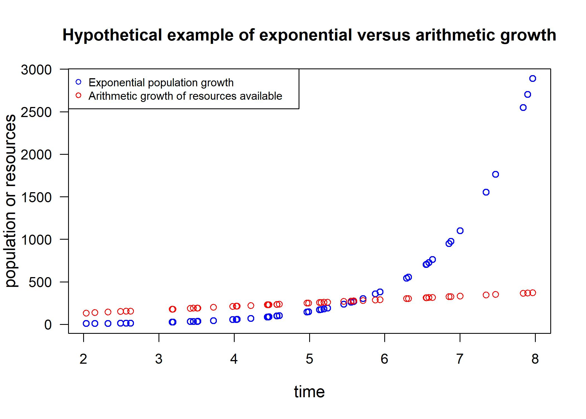
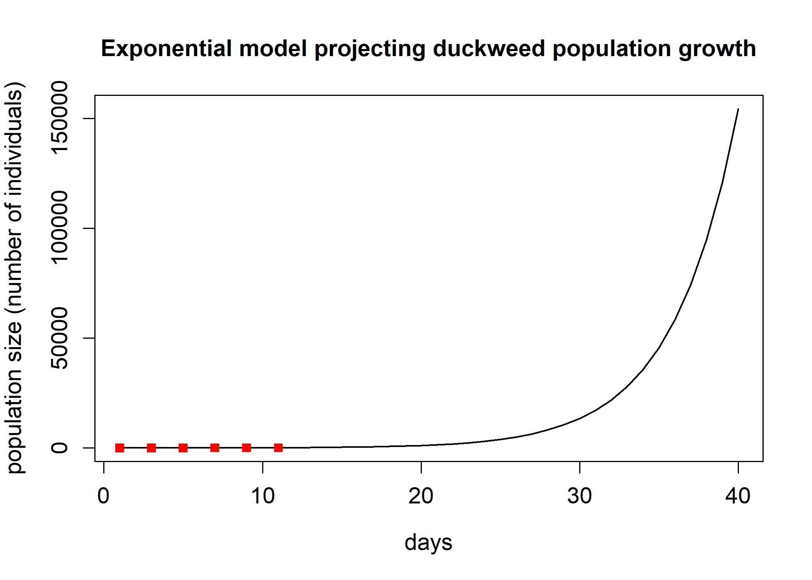
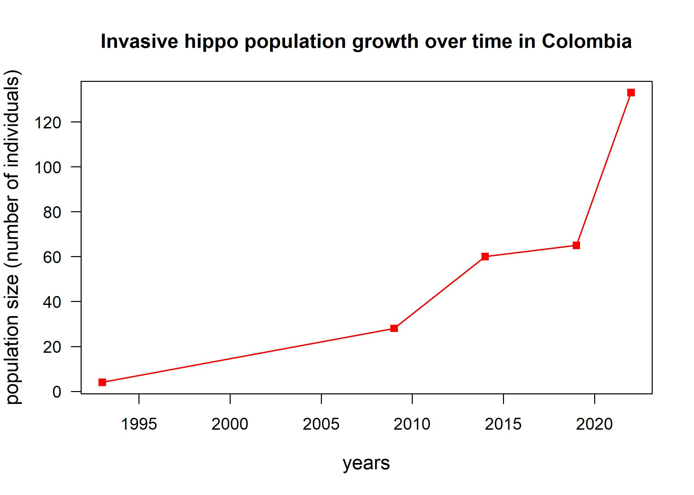
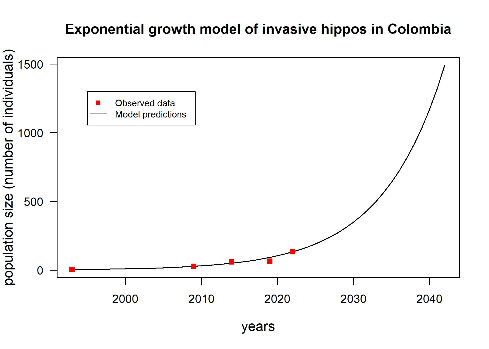
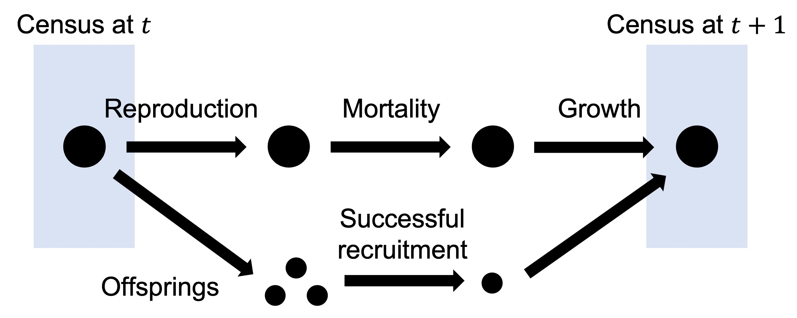
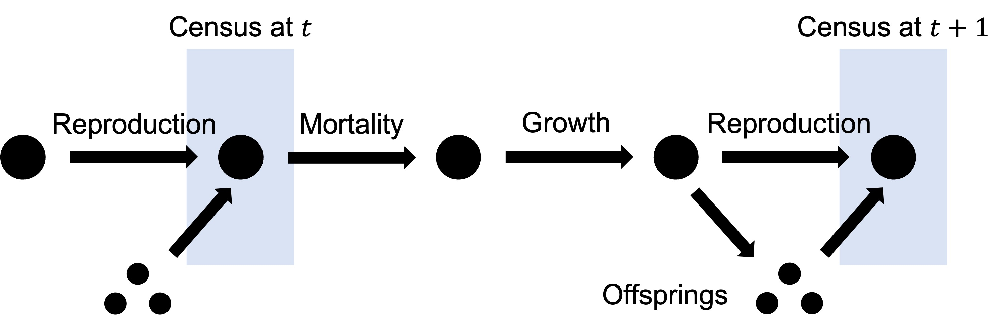
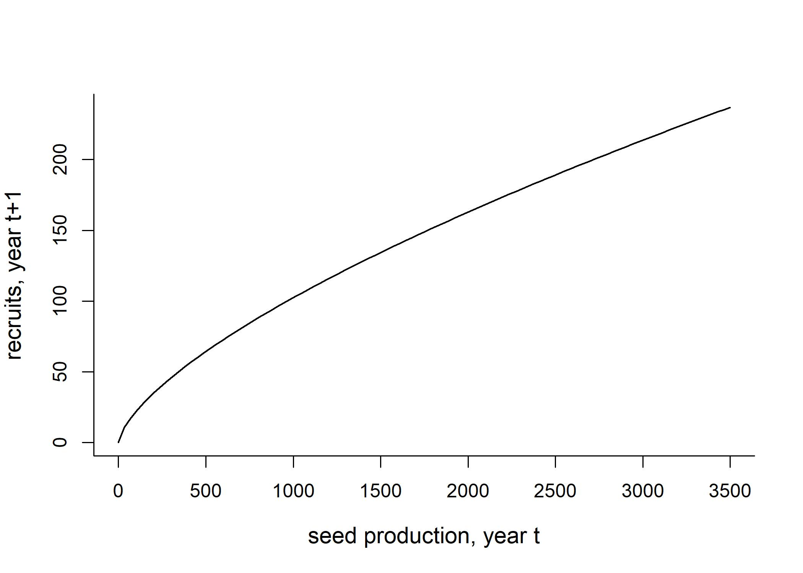

- Learning outcomes
- Unstructured Population Models
- Structured population
models
- Introduction to population structure
- Projecting a population matrix through time
- Illustratin of current application
- Sensitivities,
elasticities, and management applications
- Why are sensivities and elasticities important to population ecology studies?
- Sensitivity
- From sensitivity to elasticity
- Component sensitivity and elasticity
- Advantages of elasticities as compared to sensitivites
- Limitations of sensitivity and elasticity analyses
- Analytical sensitivity and elasticity & variance in vital rates
- Sensitivity analysis methods
- Practicing the calculation of sensitivities and elasticities
- Density-dependence in matrix models
- Environmental stochasticity in matrix models
- References
- Integral Projection
Models
- Learning outcomes
- Introduction: MPM vs. IPM
- Contruction of IPM
- Model structure
- Kernel
- From life cycle to model
- Vital rates with examples
- Illustration of current application: spatial integral projection model
- Reference
- The first step of IPMs: regressions
- How do we go about implementing an IPM for our species of interest?
- Numerical integration methods: midpoint rule
- Model diagnostics and improvement
- Case study: an IPM for snapping turtles
- References
- Density dependence in IPM
- Modeling density dependence
- Theories behind density-dependent IPM models
- Application of density-dependent IPM to an ecological problem
- References
- Environmental stochasticity in IPMs
- Example: Temperature dependent growth of gilthead seabream
- General stochastic IPM
- Two methods for IPM stochasticity
- Kernel Selection
- Parameter Selection
- Advantages and disadvantages
- Examples
- Analysis of stochastic IPMS
- Long run stochastic growth rate, \(\lambda_S\)
- \(\lambda_S\) does exist
- We can compute \(\lambda_S\)
- We can approximate \(\lambda_S\) using Tuljapurkar’s small fluctuations approximation
- Covariance in life history components
- Correlation in environmental fluctuations
- References
Learning outcomes
- Develop practical skills to independently run a model using your own data based on relevant theory and codes
- Assess the results of population models to analyze a problem of your interest
- Distinguish and compare several models and select the most appropriate model according to the life history of organisms and available data
Unstructured Population Models
Introduction
This module covers the most simple models to predict the dynamics of populations, such as exponential models. Next, stochasticity, or random effects, is approached as affecting population dynamics. Then, density-dependency is introduced as a phenomena that takes place when the amount of individuals present in a given population interferes with the growth rate of that population. Lastly, you will learn techniques to compare models to data and perform model assessment.
What is a population model?
A population model consists of mathematical equations (eg., exponential and logistic) which represent patterns of growth, reduction, or stabilization of a given population.
Basic types of population models
Unstructured population model: This model does not distinguish individuals counted as part of a given population.
Structured population model: In this type of model, individuals are categorized (eg., by age) and then counted.
Density-independent model: In more simple population models, the amount of individuals present at a given time do not interfere with reproduction success.
Density-dependent model: This model considers that the growth rate of a given population depends on the amount of individuals living at a given time.
Simple models of population dynamics
Historical facts
In 1798, Thomas Malthus published An Essay on the Principle of Population (Malthus, 1798). This work distinguished arithmetic and geometric growth, with human populations characterized by a geometric (or exponential; the difference between them will be covered soon) growth while food resources were restricted to an arithmetic pattern of growth.

{kind=link}
Let’s plot an illustration to differentiate both types of growth:
# Generate random numbers from an uniform distribution (runif(n, min, max))
x <- runif(50,2,8)
# Plot hypothetical exponential and linear growth patterns
plot(x,exp(x), lty=1, col = "blue", main="Hypothetical example of exponential versus arithmetic growth", xlab="time",
ylab="population or resources")
points(x,50+(40*x),col="red")
legend(2.2, 2400, legend=c("Exponential population growth", "Arithmetic growth of resources available"),
col=c("blue", "red"), cex=0.8, pch=c(21,1))
The main difference between these two types of growth is that an arithmetic growth is characterized by the addition or subtraction of a fixed value (eg. we added “50” in our linear growth example above, which could represent agricultural yields, for instance).
Meanwhile, geometric and exponential growths are multiplicative processes in which a fixed rate of change is applied to population sizes at all time steps.
When are simple population models used in biological analyses?
Now let’s see when simple models such as the exponential growth model are used in biology. Are there real situations where an uncontrolled growth can be understood through such models? In some situations, we can disregard factors which limit the growth of populations, such as resource availability, interactions between species, and relocation of individuals. Here are some examples:
- Experimental settings: In lab conditions, we remove as many factors as possible which could potentially interfere with the growth of our model species, so that we can focus on understanding the effects of our selected explanatory variables during experiments. In our lab, we work with duckweeds, a group of small aquatic plant species. In the photos below, you can see the difference between natural and lab conditions. In lab settings, duckweeds can achieve unlimited growth which can be modelled by exponential growth models. This is because a single species is selected and sterilized, eliminating potential sources of disease and all of the competition naturally seen between duckweed species (different sizes of fronds - leaf-like shapes - represent different duckweed species), and with other species, such as algae. In labs, other factors are also controlled to provide optimal conditions, such as light, nutrition, and temperature.

- Expanding invasive species: Following the introduction of an invasive species, its spread is enabled by an exponential population growth (Shigesada & Kawasaki, 1997) due to the availability of resources and/or absence of natural enemies. Spotted knapweeds (Centaurea nigra), for example, were accidentally introduced to North America in the 1980s with agricultural seeds and soil discarded from ship ballast from Eurasia. This species is considered problematic because it quickly replaces livestock pasture and reduces biodiversity in affected sites (Minnesota Department of Agriculture, 2023). A modelling study considering the life history of knapweeds found that exponential growth following the introduction of invading populations can be observed for about 2 years (Jacobs & Sheley, 1998). Thus, exponential models are useful for modelling the behaviour of invading species.

{kind=link}
- Management of species at risk of extinction: Well-managed species will have little limitation to growth due to abundant resources and small population sizes, resulting in exponential growth rates. This was observed following management strategies to recover endangered crane populations in both North America and Japan. Whooping cranes (Grus americana) are the largest North American birds which became severely endangered with a population of 21 birds in 1952, as well as the red-crowned crane of Hokkaido (Grus japonensis) in Japan, with 33 individuals at this same year. Since then, management efforts such as federal protection and creating wildlife refuges ensured an exponential growth of bird populations, which by 2020 achieved 506 individuals in North America and 1,900 in Japan. The much faster rate at which Japanese cranes are growing is attributed to an additional management strategy consisting of artificially feeding birds during periods of food scarcity which was not implemented in North America (Gronewold, 2021).

{kind=link}
Mathematical representation of population growth patterns
Total population considers:
Births (B)
Deaths (D)
Relocations (immigrations [I] and emigrations [E])
Mathematical representation: \[N(tomorrow) = N(today) + B - D + I - E\]
Where: N(tomorrow): number of individuals in the future (also called “abundance”) N(today): present number of individuals B: births D: deaths I: immigration E: emigration
Geometric growth
What is geometric growth?
Geometric growth is a multiplicative process. Simple singled-cell organisms have reproduction processes which result in a geometric population growth: 1 cell divides resulting in 2 cells, 2 cells divide resulting in 4, etc. In this case, the rate of change is equivalent to 2 (each cell divides into two each time). Geometric growth occurs in a discrete time scale, which means that reproduction events occur periodically in time. Annual plants, for example, can be modelled using geometric growth models.
Mathematical equation to predict future population sizes
If we assume that the number of births and and deaths is proportional to the current population size, and our population is isolated, we can write:
\[N_{(t+1)}=N_{t}(b_{t}-d_{t})\]
Where: N(t+1): number of individuals in the future Nt: number of individuals at time t bt: per capita birth rate dt: per capita death rate
Working with generation times: Net reproductive rate
R0 (pronounced as “R-naught”) is the net reproductive rate which represents the average offspring per individual within a given generation:
\[R_{0}=b_{t}-d_{t}\]
Thus, future population sizes can be calculated by:
\[N_{(t+1)}=N_{t}*R_0\]
# Let's practice: considering that an initial population of 100 individuals and a net
# reproductive rate of 1.5, what will be the total population size
# in 4 generations?
Ninitial <- 1000
R0 <- 1.2
# The net reproductive rate is multiplied several times to represent each of the 4 generations:
Nfuture <- (Ninitial*R0)*R0*R0*R0
Nfuture## [1] 2073.6Thus, for calculating population sizes at any generation, we have:
\[N_{t}=N_{0}*(R_0)^t\]
From generation time to calendar time: Lambda (\(\lambda\)) geometric growth rate
If we assume birth rates and death rates are constant through time, we are left with:
\[N_{t+1}=N_{t}*(b-d)\]
We can rename this net rate, \(\lambda\), to obtain
\[N_{t+1}=N_{t}*\lambda\]
Lambda (\(\lambda\)) is the rate of population change in units of time. The abundance in the next time step is a proportion of the current abundance.
\(\lambda\) = 1: stationary (no changes in population growth)
\(\lambda\) 1: population is growing
\(\lambda\) < 1: population is shrinking
\(\lambda\) and proportional population changes
lambda=1.45
#We can calculate how much a population will change in the next time step (eg., next year):
percentage_of_change=(lambda-1)*100## [1] 45\(\lambda\) for calculating future population size
The abundance of a population depends on the current population and on the \(\lambda\) rate:
\[N_{t+1}=N_{t}\lambda\]
Where: N(t+1): population size in the future time Nt: current population size \(\lambda\): lambda growth rate (discrete or geometric)
Obtaining \(\lambda\) from population sizes at different time points
Rearranging this last equation, we have:
\[\lambda=N_{t+1}/N_{t}\]
- Example using an annual plant
# We take note of the population growth of a given annual plant at different time periods:
year1 <- 74
year0 <- 35
# Applying the equation above we get the lambda growth rate over the first year period:
lambda <- year1/year0
lambda## [1] 2.114286Simplifying the future population growth calculation
For several time steps with growth occurring at the same \(\lambda\) rate, \(\lambda\) would be continuously multiplied by itself (in the same fashion as R0), so we have:
\[N_{t}=N_{0}\lambda^t\]
Missing data for certain time periods: Average \(\lambda\) calculation
When we do not have data for calculating all \(\lambda\) over several time periods, we can rearrange the equation we just saw and consider the latest time period available and the first time period:
\[\lambda=(N_{t}/N_{0})^{1/t}\]
# Here are population numbers for a given plant species at year 2 and year 0:
year2 <- 173
year0 <- 35
# The average yearly lambda is:
lambda <- (year2/year0)^(1/2)Exponential growth
What is exponential growth
For populations which do not reproduce seasonally, an irrestricted growth can be projected using the exponential growth model. Instead of the \(\lambda\) rate, the instantaneous per capita growth rate (r) is used to represent a constant percentage increase over a continuous time scale. This rate is also useful to compare populations with different intervals of growth.
How to calculate the exponential growth rate
Using calculus, very small changes in abundance over time can be obtained by the derivative:
\[dN/dt=rN\] Where: dN = very small change in abundance dt = very small change in time N = present abundance r = per capita growth rate
Abundance over time in a logarithmic scale
If represented in a logarithmic scale, the curve line becomes a straight line, and the slope of the line corresponds to r.
Converting between \(\lambda\) and r
The natural logarithm of \(\lambda\) corresponds to r:
\[r=ln\lambda\] or
\[\lambda=e^r\]
While \(\lambda\) values greater than 1 represent growing populations, r values greater than 0 correspond to population increases in size.
Example using duckweeds
Remember our duckweeds? Due to their fast and asexual growth, they are good model species for population ecology studies. Duckweed population growth can be calculated in a number of ways, such as counting individual fronds (leaf like shape) or measuring the dry weight of specimens. Try to count how many individuals are found in each date in the picture below. Any round-shaped protuberance can be considered as a separate individual.

# Let's create a dataframe using the duckweed population counts we have just obtained
# from the picture above:
duckweed <- data.frame(day=(c(1,3,5,7,9,11)),pop_size=(c(9,12,23,45,68,103)))
# Now, let's calculate the average daily $\lambda$:
lambda <- (duckweed[6, "pop_size"]/duckweed[1, "pop_size"])^(1/(duckweed[6, "day"]-duckweed[1, "day"]))The average daily lambda is 1.28.
# And the r
r<-log(lambda)The intrinsic rate of increase is 0.24. This means that our duckweed populations are growing at an average daily rate of 24.38%.
# And here we simulate the growth of duckweeds over a 40-day period
N0 <- duckweed$pop_size[1]; t <- 1:40
cont.mat <- sapply(r, function(ri) N0 * exp(ri * t))
matplot(t, cont.mat, type = "l", col = 1,
main="Exponential model projecting duckweed population growth",
xlab="days", ylab="population size (number of individuals)")
points(duckweed$day, duckweed$pop_size,pch=15,col="red")
legend(1995, 1300, legend=c("Observed data", "Model predictions"),
col=c("red", "black"), cex=0.8, lty= c(NA,1), pch=c(15,NA))
Simplifying the exponential growth calculation
Due to the ability to replace \(\lambda\) for r and vice-versa, we have:
\[N_{t}=N_{0}e^{rt}\]
Doubling time
If we need to know how much time it would take for a population to achieve twice as much its initial size, we replace N(final)/N(initial) with 2 in our exponential growth equation. We then take the natural logarithm from both sides of the equation to solve, resulting in:
\[t_{double}=0.69/r\]
# We can use this equation to calculate the doubling time for our experimental duckweeds:
double <- 0.69/rThe doubling time for our duckweeds is 2.83 days.
Illustration of current application
Ecosystem effects of the world’s largest invasive animal (Shurin et al., 2020). This research paper discusses population dynamics of invasive hippos in Colombia.
Snapshot of the study
An invasive population of hippopotamus (Hippopotamus amphibus) is showing an exponential growth in Colombia
These large mammals were brought from Africa to the famous drug trafficker Carlos Scobar’s private zoo about 25 years ago
Following Scobar’s death, the then abandoned animals started spreading in the region, going from 4 to 65 individuals in 25 years
Hippos are considered as ecosystem engineers because they modify ecosystems by grazing on land and defecating in water bodies, thereby fertilizing aquatic systems
The growth of this invasive population appears to be in an exponential phase, with numbers achieving thousands in the following decades if no control measures are taken or without density-dependent regulation (to be introduced in the following module)
This study analyzed aquatic and terrestrial areas populated by hippos to conclude that this invasive species is substantially changing the environment by relocating nutrients from the soil to the water, resulting in cyanobacteria blooms. Continued unrestricted hippo population growth can then lead to water resource damage.
Constrains to management: Actions to manage this invasive species are complicated by the social-ecological mismatch between the scientific consensus on the ecosystem threats posed by this invasion and the public perception of the presence of hippos as being positive (eg., animal used for touristic purposes)

{kind=link}
Calculating the population growth of invasive hippos
# First, let's create a data frame containing dates and respective population counts
# as in Shurin (2020). We added additional records obtained from news outlets:
hippo <- data.frame(year=c(1993, 2009, 2014, 2019, 2022),pop_size=(c(4, 28, 60, 65, 133)))
# source for 2009: Romero (2009)
# source for 2014: Kremer (2014)
# source for 2022: Varona (2022)
plot(hippo$year, hippo$pop_size, type="o", pch=15, col="red",
main="Invasive hippo population growth over time in Colombia",
xlab="years", ylab="population size (number of individuals)")
# Now, let's calculate the average yearly $\lambda$:
lambda <- (hippo[5, "pop_size"]/hippo[1, "pop_size"])^(1/(hippo[5, "year"]-hippo[1, "year"]))The average yearly lambda is 1.13.
# By taking the natural logarithm, we convert $\lambda$ to r
r<-log(lambda)The intrinsic rate of increase is 0.12. This means that this invasive hippo population is growing at an average yearly rate of 12.08”%.
# To predict population sizes, we first set our initial population size
initial<-hippo$pop_size[1]
# And we create an empty vector in which we will later include population sizes for the
# next 50 years
pred.pop.expon<-vector("numeric", 50)
# Our modelling starts with initially observed population sizes
pred.pop.expon[1]<-initial
# And we add a function to calculate population sizes according to our previously
# estimated growth rates
for(i in 2:50){
pred.pop.expon[i]<-pred.pop.expon[i-1]*lambda
}
# Adding a dataframe to include our predictions
hippo.model <- data.frame(year=c(1993:(1993+49)),pop_size=pred.pop.expon)
# And plotting predicitons and observed data
plot(hippo.model$year, hippo.model$pop_size,type="l",
main="Exponential growth model of invasive hippos in Colombia",
xlab="years", ylab="population size (number of individuals)")
points(hippo$year, hippo$pop_size,pch=15,col="red")
legend(1995, 1300, legend=c("oObserved data", "Model predictions"),
col=c("red", "black"), cex=0.8, lty= c(NA,1), pch=c(15,NA))
This illustration demonstrates the utility of the exponential growth model for studying invading populations. Why do you think hippos are showing this uncontrolled growth?
Hippo invasion in Colombia: take-aways and future developments
The research found an annual per capita growth rate of 0.11 x yr^-1 for invasive hippos, which is comparable to population growth rates in the native range and indicates a potential for quick spread of this invasive species in the next decades. The growth rate we obtained above is slightly different because we took into account additional recent demography records. The lack of predators in both native and invasive ranges (Sinclair, Mduma, & Brashares, 2003; Castelblanco-Martínez et al., 2021) is a key factor enabling uncontrolled hippo population growth.
As a next step, refining population growth studies to include stage structure and age at maturity could help identifying useful management strategies, as there may be life history traits which are more relevant to population growth than others. For example, the population structure of hippos appears to be an important factor when predicting future invasion scenarios, as “half of those hippos are calves and juveniles, implying their reproductive rate will increase in the next three years” (Varona, 2022). You will learn about structured population models in the upcoming modules.
Further Reading
Theoretical work
To read about the theory behind simple models, refer to:
* Mills, L.S. (2012). Conservation of wildlife populations:
Demography, genetics, and management. Wiley- Blackwell.
Population modelling codes
To further practice the application of simple models, here are good
guides:
* Dyer, R. (2009). Biological data analysis using R (Doctoral
dissertation, Ph. D thesis. Department of Biology, Center for the Study
of Biological Complexity, Virginia Commonwealth Univ).
- Stevens, M.H. (2009). A primer of ecology with R. Springer.
New applications
- Thomas, L., Russell, D. J., Duck, C. D., Morris, C. D., Lonergan, M., Empacher, F., … & Harwood, J. (2019). Modelling the population size and dynamics of the British grey seal. Aquatic Conservation: Marine and Freshwater Ecosystems, 29, 6-23.
R Resources
Packages
deSolve: contains solvers (function “ode”) for integrals: eg., integral of the exponential growth equation and ordinary differential equations (ODE): eg., logistic growth
clogistic: logistic growth equation
AICcmodavg: model evaluation using Akaike information criteria
Functions
References
Castelblanco-Martínez, D. N., Moreno-Arias, R. A., Velasco, J. A., Moreno-Bernal, J. W., Restrepo, S., Noguera-Urbano, E. A., … & Jiménez, G. (2021). A hippo in the room: Predicting the persistence and dispersion of an invasive mega-vertebrate in Colombia, South America. Biological Conservation, 253, 108923.
Dyer, R. (2009). Biological data analysis using R (Doctoral dissertation, Ph. D thesis. Department of Biology, Center for the Study of Biological Complexity, Virginia Commonwealth Univ).
Gronewold, N. (2021). Comparative Conservation Strategy Efficacy for Grus japonensis and Grus americana: A Post-Policy Implementation Assessment. Journal of International Wildlife Law & Policy, 24(3-4), 224-250.
Jacobs, J. S., & Sheley, R. L. (1998). Observation: life history of spotted knapweed. Rangeland Ecology & Management/Journal of Range Management Archives, 51(6), 665-673.
Kremer, W. (2014, June 25). Pablo Escobar’s hippos: A growing problem. BBC News. https://www.bbc.com/news/magazine-27905743
Malthus, T. R. (1798). An essay on the principle of population. The Works of Thomas Robert Malthus, London, Pickering & Chatto Publishers, 1, 1-139.
Mills, L.S. (2012). Conservation of wildlife populations: Demography, genetics, and management. Wiley- Blackwell.
NBCUniversal News Group. (2014, July 1). Pablo Escobar’s hippos are running wild in Colombia. NBCNews.com. https://www.nbcnews.com/news/latin-america/pablo-escobars-hippos-are-running-wild-colombia-n145446
Romero, S. (2009, September 10). Colombia confronts drug lord’s legacy: Hippos. The New York Times. https://www.nytimes.com/2009/09/11/world/americas/11hippo.html
Shigesada, N. & Kawasaki, K. (1997) Biological Invasions: Theory and Practice (Oxford Univ. Press, Oxford).
Shurin, J. B., Aranguren-Riaño, N., Duque Negro, D., Echeverri Lopez, D., Jones, N. T., Laverde‐R, O., … & Pedroza Ramos, A. (2020). Ecosystem effects of the world’s largest invasive animal. Ecology, 101(5), e02991.
Sinclair, A. R., Mduma, S., & Brashares, J. S. (2003). Patterns of predation in a diverse predator–prey system. Nature, 425(6955), 288-290.
Spotted knapweed. (2023). Minnesota Department of Agriculture. https://www.mda.state.mn.us/plants/pestmanagement/weedcontrol/noxiouslist/spottedknapweed
Stevens, M.H. (2009). A primer of ecology with R. Springer.
Varona , A. O. (2022, November 18). Hippos in Colombia: What to do with them? | Graduate and Postdoctoral Studies | Rice University. https://graduate.rice.edu/news/current-news/hippos-colombia-what-do-them
Density dependence
Density-dependent population models are used to describe population dynamics in which the growth or decline of a population is influenced by the population’s own density.
Logistic growth model
Recall that with exponential growth, per capita growth rate is:
\[ r = \frac{dN}{dtN} \]
- dN/dt: The net number of new individuals in a population over a unit of time (also called recruitment or yield)
- r: Intrinsic growth rate
- N: Population size
Of all the ways that the per capita growth rate could decrease with increasing population density, we consider the simplest scenario in which this relationship is linear. Now we have:
\[ \frac{dN}{dtN} = r(1-\frac{N}{K})\]
- K: Carrying capacity
where \(1-\frac{N}{K}\) describes the negative effects an increasing population density has on the per capita growth rate.
Re-arrange the above equation and we have the continuous logistic growth model:
\[ \frac{dN}{dt} = r \frac{K-N}{K} N \]
- K − N: How many more individuals can be added to the population before it hits carrying capacity
- K − N/K: The fraction of the carrying capacity that has not yet been “used up”
Negative density dependence
In a population that has already been established, resources begin to become scarce, and competition starts to play a role. As a result, the population growth will be negatively affected by increasing density. This is called negative density dependence.
Increasing population size gives rise to:
shortages in food or other limiting resources
greater intraspecific aggression
increased predation risks
greater risks of disease outbreak
Negative density dependence decreases population growth at high density and increases it at low density.
Here is another example from the duckweed showing how population size can limit the population growth of duckweed in a controlled environment.

- Carrying capacity (K)
The maximum per capita growth rate, \(r\), occurs when population density is zero, and decreases until it finally reaches zero. The population density at which the per capita growth rate is zero, K, is sometimes called the carrying capacity.
- Note: Do not think of carrying capacity as the maximum population size observed. A population can exceed K temporarily.
With all these concepts, now we should look at the logistic population model.
Stability
The stability of a system is a measure of how much it tends to stay the same, in spite of external disturbances or changes in the state of the system. A logistic population growth model is a system with stability, and carrying capacity \(K\) is the stable equilibrium point. Population size above \(K\) will decrease to \(K\); while population size below \(K\) will increase to \(K\).
Consider a logistic growth model with a carrying capacity \(K=500\) and per capita growth rate \(r=0.18\):
When the population number is at 100 (point b) or 200 (point c), the population will grow, moving along the x-axis, until population growth rate slows so much that it comes to rest where \(N=K=500\).
When the population number is at 550 (point e), \(dN/dt\) is negative, so \(N\) shrinks back down to \(N=K=500\).
When population number is at 0 (point a) or 500 (point d), the population growth rate is at zero so that the density will not change.
Discrete time logistic growth
For many populations, reproduction and mortality occur at very particular periods of the year (in discrete intervals of time).
Discrete logistic equation
To model discrete logistic population growth, we start from recalling our model of geometric growth for a single time step:
\[ N_{t+1} = \lambda N_t\]
We can decompose \(\lambda\) into two parts to illustrate that this year’s population density \(N_t+1\) is equal to the previous year’s population, \(N_t\), plus a proportional change, \(r_dN_t\):
\[N_{t+1} = \lambda N_t = N_t(1+r_d) = N_t+r_dN_t\]
Now we can try to incorporate density dependence into that proportional change \(r_dN_t\). We use \(1/K\) to represent this negative effect on population growth. As a result, \(r_d(1- \frac{N_t}{K})\) becomes the new per capita growth increment rate.
And we have an equation that describes discrete logistic growth:
\[N_{t+1} = N_t+r_d(1- \frac{N_t}{K})N_t = N_t+r(1-\frac {N_t}{K})N_t\]
where \(K\) is the carrying capacity.
From the equation, we can see that the population abundance at time \(t+1\) depend on the abundance at time t. This time lag makes sense for many populations, where birth and death rates respond to the population’s density at some time in the past, instead of current density.
Chaos
Populations growing with absolutely no stochasticity could show dynamics that bounce, or cycle, or become entirely unpredictable.
Let’s look at the following example:
We have a population that has an initial population density of \(N=10\), and carrying capacity \(K=100\). With different values of \(r\), we can see very different population growth trajectories.
When \(r\) is close to zero, we have a steady simple asymptotic approach to K (Fig. a). As \(r\) increases, we see the population overshoot the carrying capacity and exhibit damped oscillations (Fig. b). At \(r=2.2\), we see a stable limit cycle of two points (Fig. c). As \(r\) increases further, a four-point limit cycle is observed (e.g., at \(r=2.5\), Fig. d), then an eight-point cycle, a 16-point limit cycle, and so on. As \(r\) increases further, however, stable limit cycles shift into chaos (Fig. e).
Bifurcation Graph We can also demonstrate the chaotic dynamics using a bifurcation plot, which examines \(N\) as a function of \(r\). As \(r\) increases the number of \(N\) will continue to double, growing geometrically. Eventually, we reach a point when there becomes an infinite number of unique points.
Chaos is a non-repeating, deterministic
fluctuating trajectory, that is bounded, and sensitive to initial
conditions.
How does chaos happen? The discrete logistic model has a built in delay, or time lag, of one time step, because the growth increment makes a single leap of one time step. This time delay in population response results in chaos dynamics.
- Note that chaos is different from stochasticity or randomness. If you start with exactly the same initial conditions under chaotic dynamics, you will get exactly the same population trajectories every time
Chaos is very sensitive to initial conditions. Slightly changing the initial population number \(N_0\) would result in very distinct results.
- Here we start with two populations that have initial size of 10 and 11 (all other parameters remain the same). As shown on the graph below, we see completely different trajectories for population growth.
Biological significance of chaos in population growth
Chaos brings more complexity into predicting population growth, especially for species with relatively large \(r_d\) value. For example, for temperate-zone insects in particular, even if the natural world was 100 % predictable, the population dynamics could still in some circumstances be indistinguishable from chaos (May, 1975).
Other types of density dependent population models
The linear decline in per capita growth rate with density modeled above is not necessarily general. In fact, most species exhibit nonlinear declines in growth rate under negative density dependence.
Concave and convex density dependences
Concave density dependence: Per capita population growth rate declines rapidly at low density, and then flattens out as carrying capacity is approached. This could happen due to resource preemption, where a small of individuals at low population density sequester large amounts of resources, causing subsequent population growth to slow down. For example, larger tropical seagrass arriving at sites would preempy available space to prevent subsequent individuals from competing for these resources (Moreira-Saporiti et al., 2021)
Convex density dependence: Per capita population growth rate exhibits strong density dependence only near K. This could be related to territoriality. For example, dickcissel birds (Spiza americana) need a minimum territory size of approximately 0.9 acres. If male density is greater than this, some males will be forced into territories that contain less suitable vegetation and they are found to be less active in finding mates and building nests. As a result, the per capita growth rate will decline more rapidly compared to before (Zimmerman, 1971)
Theta-Ricker model
The most common way to model non-linear density dependent population growth is the Theta-Ricker model. By varying \(\theta\), we can change the linear density dependence of the simple logistic model to curvi-linear density dependence.
\[ N_{t+1} = N_t e^{r_0[1-(N_t/K)^\theta]} \]
- The effects of \(\theta\) on density dependence control the shape of relation between growth rate and population size, as seen in the following figure:
- When \(\theta\)>1, this weakens density dependence at low N, so the population grows faster than logistic, all else being equal (concave). When \(\theta\)<1, this strengthens density dependence at low N, causing the population to grow more slowly than logistic, all else being equal (convex):
Positive density dependence
In many cases, cooperation or facilitation leads to mutually positive interactions among members of a population. Positive density dependence occurs when vital rates or populations increase as density increases.
Allee effect
Allee & Bowen (1932) initially noticed that goldfish grew faster in waters which had previously contained other goldfish, than in waters that had not contained them. He further experimented with a number of different species and showed that larger group size or some degree of crowding may stimulate reproduction, prolong survival in adverse conditions (through resistance to desiccation or by social thermoregulation), and enhance protection from toxic reagents.
The Allee effect occurs when there is a positive correlation between population density and individual fitness at low population density.

{kind=link}
Example
African wild dogs usually live in a pack of 6-20 individuals
Increasing pack size can:
increase the likelihood of a successful kill in a given hunt
provide a better predator defense
help babysit pups (packs with 10 or more adults raised three times as many yearlings compared to packs with 9 or fewer adults)
Weak and strong Allee effects
Weak Allee effects: A weak Allee effect is where the population growth rate is small but positive for small N. The population does not contain a critical population size or density under which the growth rate becomes negative
Strong Allee effects: A strong Allee effect describes a population that can grow at intermediate population densities but declines when the number of organisms is either too small or too large
Allee effect population threshold: A population size below which the per capita growth rate is negative and the population declines towards extinction. Populations that are subject to Allee effects can collapse and become extinct if their population size falls below the critical threshold
To plot population growth rate as a function of abundance:
\[\frac{dN}{dt} = rN(\frac{N}{a}-1)(1-\frac{N}{K})\] where a is the critical point of the population, below which the population growth rate (or recruitment) becomes negative, and the population is driven towards extinction.
Stability in Allee effects
From previous sections we learned that carrying capacity \(K\) is a stable equilibrium point in a negative density-dependent logistic growth model (no Allee effects).
For a population model with a strong Allee effect. It has two stable and one unstable equilibria point. The stable point is when population size equals \(N=0\) or carrying capacity \(N=K\). The single unstable equalibrium point lies at \(N=A\), where \(A\) is the critical population size.
Illustration of current application
Density-dependent condition and growth of invasive lionfish in the northern Gulf of Mexico (Dahl et al., 2019). This research paper discusses how increasing population density can affect invasive lionfish size-at-age (growth) and population dynamics.
{kind=link}
Snapshot of the study
Indo-Pacific red lionfish (Pterois volitans) have invaded the Gulf of Mexico over the past 30 years. Their invasion success is likely due to a release of predation pressure in the novel environment
Their invasion poses long-term threats to the native communities by altering trophic structures through direct predation, and reducing species richness
An exponential increase in lionfish density at both natural and artificial reefs was observed beginning in 2010 through 2014, after which mean lionfish density on both reef types reached an apparent peak. Throughout the following years, the population number is fluctuating around this peak value (check the plot below)
The growth of invasive lionfish appears to be density-dependent. Lionfish inhabiting densely populated reefs exhibited smaller mean size at age (slower growth)
Calculating the population growth of invasive lionfish
# First, let's create a data frame containing population counts as in Dahl et al. (2019):
lionfish <- data.frame(year = c(2010, 2011, 2012, 2013, 2014, 2015, 2016, 2017),
density_natural = c(0, 0.02, 0.15, 0.49, 0.57, 0.34, 0.43, 0.56),
density_artificial = c(0, 2, 8, 14.7, 32.98, 30.5, 20.45, 32.98))
# We can plot the population trajectories for both populations inhabiting natural and artificial reefs:
par(mfrow=c(1,2))
plot(lionfish$year, lionfish$density_natural, type="o",
pch=16, lwd=1.5, bty="l", cex.lab=1.2, cex.main=0.8,
main="(a)",
xlab="years", ylab="population size")
plot(lionfish$year, lionfish$density_artificial, type="o",
pch=16, lwd=1.5, bty="l", cex.lab=1.2, cex.main=0.8,
main="(b)",
xlab="years", ylab="population size")From both figures, we can see that the invasive lionfish population increases exponentially during the first years (2011-2014). After potentially reaching carrying capacity in 2014, it starts to fluctuate around that peak value. If this trend continues, a density-dependent logisitic growth curve will represent well the growth patterns for these populations.
Takeaways from this example
The population growth of invasive lionfish in the Gulf of Mexico is likely to be density-dependent. Population trends suggest that this species may have already reached carrying capacity
Future studies should examine other potential density-dependent demographic rates (e.g. movement, fecundity, mortality) in invasive lionfish populations to capture the full extent of density-dependent effects
Knowing the population dynamics for this species enables the application of effective fish removal programs
References:
Allee, W. C., & Bowen, E. (1932). Studies in animal aggregations: Mass protection against colloidal silver among goldfishes. The Journal of Experimental Zoology 61 (2), 185–207. https://doi.org/10.1002/jez.1400610202.
Bohlin, T., Sundström, L., Johnsson, J., Höjesjö, J., & Pettersson, J. (2002). Density-dependent growth in brown trout: Effects of introducing wild and hatchery fish. Journal of Animal Ecology 71(4), 683–92. https://doi.org/10.1046/j.1365-2656.2002.00631.x.
Courchamp, F., Luděk, B., & Gascoigne, J. (2008). Allee effects in ecology and conservation. Oxford Biology. Oxford; Oxford University Press.
Drake, J., & Kramer, A. (2011). Allee effects. Nature Education Knowledge. https://www.nature.com/scitable/knowledge/library/allee-effects-19699394/.
Dahl, K. A., Edwards, M. A., & Patterson III, W. F. (2019). Density-dependent condition and growth of invasive lionfish in the northern Gulf of Mexico. Marine Ecology Progress Series, 623, 145-159. https://doi.org/10.3354/meps13028.
May, Robert M. (1975). Biological populations obeying difference equations: stable points, stable cycles, and chaos. Journal of Theoretical Biology 51(2), 511–24. https://doi.org/10.1016/0022-5193(75)90078-8.
Mills, L. S. (2013). Conservation of wildlife populations: demography, genetics, and management. 2nd ed. Chichester, West Sussex; Wiley-Blackwell.
Moreira-Saporiti, A., Bejarano, S., Viana, I., Belshe, E., Mtolera M., & Teichberg, M. (2021). Local victory: Assessing interspecific competition in seagrass from a trait-based perspective. Frontiers in Plant Science 12, 709257–57. https://doi.org/10.3389/fpls.2021.709257.
Stevens, M., Henry H. (2009). A primer of ecology with R. Use R! Dordrecht: Springer.
Zimmerman, John L. (1971). The territory and its density dependent effect in Spiza americana. The Auk 88(3), 591–612.
Population dynamics and stochasticity
We have studied different population models in previous sections. However, these models are still relatively “naive”, since population change in the real world will never be constant. In this section, we will add randomness, or stochasticity, to the population models.
Why are changes in population variable?
- Sample variance or observation error: measurement error in estimates of population size or density
- Process variance: variation acually affecting
numbers in count data over time
- Deterministic factors: predictable internal drivers, such as density dependence, predation and competition.
- Stochastic factors: unpredictable random fluctuations. Some fluctuations might in fact be driven by deterministic factors (and thus might be predictable with more complete information), but they can be more easily treated as stochastic factors.
Basic forms of stochasticity
There are two main forms of stochastic process variance: demographic and environmental stochasticities.
Demographic stochasticity refers to chance events of individual mortality and reproduction, such as inevitable deviation in mean birth and death rates (Lande et al., 2003). Demographic stochasticity is only significant in small populations, and we will explain this in three examples.
Example 1: Flipping a coin 10,000 times, one will get approximately 5,000 times heads; flipping the same coin 100 times, there could be some deviations from the expected 50:50; flipping the same coin 10 times, it is not suprising that one only gets 2 heads. The probability of getting head is approaching 0.5 as the number of trials increases.
Example 2: The expected sex ratio for a newborn is 50:50. When there are 3 new births, we cannot have 50% males and 50% females. Unbalanced sex ratio will influence future birth rate, especially in a small population.
Example 3: A death rate of 0.2 does not mean after a year an animal is 0.8 alive–it either survives or dies. When the population size is large, we may use the product of the total populatiom and a mean birth/death rate to estimate the number of births/deaths. However, such estimation is not accurate when the population size is small (a difference of two deaths might not seem to be a big issue in a population of size 1000, but will be significant in a population of size 20).
Environmental stochasticity often refers to temporal fluctuations in the probability of mortality and reproduction (Lande et al., 2003), which is often driven directly or indirectly by weather (e.g. unpredictable catastrophes).
- Example 1: Climate factors have a strong influence on the ecology of red deer in Scotland (Albon et al., 1987). Real-world data between 1971 and 1991 has shown that the changes in red deer population size correlates strongly with annual rainfall (Benton et al., 1995)
_young_stag.jpg){kind=link}
- Example 2: Cold-blooded insects like mosquitoes thrive in hot and humid weather, which results in the seasonality of many vector-borne diseases, such as malaria and dengue. There is massive research on modelling the mosquito population dynamics and how they affect the transmission of those diseases. For an example, refer to Beck-Johnson et al. (2013)
Implications of variation in population growth
An obvious outcome is that future population size outcomes become more uncertain and more variable
A less intuitive outcome is that the likelihood of any particular population size at time \(t\) in the future becomes more skewed. Specifically, most populations being relatively small, with a tiny fraction being huge. In fact, the realized population growth rate \((N_t/N_s)^{1/(t-s)}\) will be smaller when the growth rates vary. Why?
To answer this question, we need to understand two important concepts: arithmetic and geometric means.
Arithmetic mean vs. geometric mean
Let \(\lambda_A\) and \(\lambda_G\) denote the arithmetic and geometric mean, respectively. We have the following definitions: \[\lambda_A=\frac{1}{k}\sum_{i=1}^k\lambda_i,\] \[\lambda_G=\left(\prod_{i=1}^k\lambda_i\right)^{\frac{1}{k}}.\]
- Example: Consider \(N_{t}=\lambda_tN_{t-1}\), where \(N_t\) is the population at time \(t\), and during each time interval \((t-1,t)\) the growth rate is \(\lambda_t\). Assume \(\lambda_t=1.55\) or \(\lambda_t=0.55\) with the same probability. Assuming that the population grows at a constant arithmetic mean rate \(\lambda_A=(1.55+0.55)/2=1.05\), the population at \(t=16\) is \[N_{16}=1.05^{16}N_0=2.18N_0.\] Instead, if we assume that the growth rate alternated between \(1.55\) and \(0.55\), the population at \(t=16\) becomes \[N_{16}=1.55^8\times0.55^8N_0=[(1.55\times0.55)^{1/2}]^{16}N_0=0.28N_0,\] which indicates that the variation in population growth leads to a likely decline for the population, even though the (arithmetic) average growth rate is larger than 1 (Mills, 2007). In fact, the geometric mean growth rate is \(\lambda_G=(1.55\times0.55)^{1/2}\approx 0.9233\).
Converting between \(\lambda\) and \(r\)
Recall that the natural logarithm of the growth rate, \(r=\ln\lambda\). It would be helpful to know the conversion between the arithmetic mean of \(r\) and the geometric mean of \(\lambda\). Note that \[\ln(\lambda_1\lambda_2\cdots\lambda_k)=\ln\lambda_1+\ln\lambda_2+\cdots+\ln\lambda_k=r_1+r_2+\cdots+r_k,\] which gives \[\ln(\lambda_1\lambda_2\cdots\lambda_k)^{1/k}=\frac{1}{k}\ln(\lambda_1\lambda_2\cdots\lambda_k)=\frac{1}{k}(r_1+r_2+\cdots+r_k),\] and thus \[\ln\lambda_G=r_A.\]
Remember we mentioned earlier that highly variable growth rates will more likely result in a smaller final population? Now we have the knowledge to show this! Let \(\lambda_t=\lambda_A+\epsilon_t\), where \(\epsilon_t\) is the deviation of \(\lambda_t\) from the arithmetic mean \(\lambda_A\) with zero mean. Using the Taylor expansion of \(\ln(1+x)\), one could obtain \[\begin{aligned}\ln\lambda_t & =\ln\lambda_A+\ln(1+\epsilon_t/\lambda_A)\\~ & =\ln\lambda_A+ \epsilon_t/\lambda_A-(\epsilon_t/\lambda_A)^2/2+O(\epsilon_t^3),\end{aligned}\] where \(O(\epsilon_t^3)\) denotes the higher order terms. Hence, taking the expectation of both sides gives \[r_A=E(\ln\lambda_t)\cong\ln\lambda_A-\frac{E[(\lambda_t-\lambda_A)^2]}{2\lambda_A^2}=\ln\lambda_A-\frac{\sigma_\lambda^2}{2\lambda_A^2},\] which further gives \[\lambda_G\cong\exp\left(\ln\lambda_A-\frac{\sigma_\lambda^2}{2\lambda_A^2}\right).\] As we can see, when the variance of growth rates \(\sigma_\lambda^2\) gets larger, geometric mean growth rate \(\lambda_G\) gets smaller. In fact, the geometric mean is never larger than the arithmetic mean (and they are equal if and only if every term is the same).
Temporal autocorrelation
The examples above assume that \(r_t\) does not depend on previous growth rates, nor will it influence subsequent growth rates. This assumption may not be very realistic. Here we introduce the idea of temporal autocorrelation, which describes the relationship between \(r_t\) and \(r_{t+\tau}\), its value at a time lag \(\tau\). One way to incorporate temporal autocorrelation is to: \[r_{t+\tau}=r_A+\rho(r_{t}-r_A)+\epsilon_{t+\tau},\] where \(\rho\) is the coefficient of lag-\(\tau\) autocorrelation, and \(\epsilon_t\sim N(0,\sigma_\epsilon^2)\) is white noise with zero mean and constant variance. An example would be the case \(\tau=1\) (lag-1 autocorrelation), where \(r_{t+1}=r_A+\rho(r_t-r_A)+\epsilon_{t+1}\). When \(\rho=0\), \(r_{t+1}=r_A+\epsilon_{t+1}\) and there is no temporal autocorrelation. Here we present examples of exponential growth rates with zero autocorrelation and positive lag-1 autocorrelation.
# We assume that the mean exponential growth rate r_A = 0.3,
# and the noise term epsilon_t is a standard normal random variable,
# We look at a time period of 20 years
rA <- 0.3
e <- rnorm(20, mean = 0, sd = 1)
r <- data.frame(year = 1:20, zero = rA + e)# Calculate exponential growth rates with positive lag-1 autocorrelation
# We compare different coefficients rho = 0.2, 0.5, 0.8
pos1 = replicate(20, rA + e[1])
for (i in 2:20) {
pos1[i] <- r[i,'zero'] + 0.2*(pos1[i-1] - rA)
}
r$pos1 <- pos1
pos2 = replicate(20, rA + e[1])
for (i in 2:20) {
pos2[i] <- r[i,'zero'] + 0.5*(pos2[i-1] - rA)
}
r$pos2 <- pos2
pos3 = replicate(20, rA + e[1])
for (i in 2:20) {
pos3[i] <- r[i,'zero'] + 0.8*(pos3[i-1] - rA)
}
r$pos3 <- pos3
Estimating population growth rates in the presence of process/observation error
Now we move on to an important section, where we try to estimate the growth rate from data, assuming some very simple models. But first, let’s talk about different types of errors we might encounter.
Process error results from variation in true population size due to biotic or abiotic processes (Ahrestani et al., 2013). Environmental and demographic stochasticities are examples of process errors.
When only process error exists, the population at each time \(t\), \(N_t\), is known and accurate. The growth rate \(\lambda_t\) is a random variable. For example, a geometric model with only process error can be described as \[\begin{aligned}N_{t+1} & =\lambda_tN_t,\\\lambda_t & \sim N(\bar\lambda,\sigma_p^2),\end{aligned}\] where \(\lambda_t\) follows a normal distribution with mean \(\bar\lambda\) and variance \(\sigma_p^2\).
Since the population at each time \(t\), \(N_t\), is known and accurate, we can calculate the estimated growth rate using geometric mean \[\hat\lambda=\left(\prod_{i=1}^t\frac{N_{i}}{N_{i-1}}\right)^{\frac{1}{t}},\] or equivalently, \[\hat r=\frac{1}{t}\sum_{i=1}^t\ln\frac{N_i}{N_{i-1}}.\]
We can notice that the estimated growth rate is only related to the initial and the final population size, as all the terms between them can be cancelled out. In other words, \[\hat\lambda=\left(\frac{N_t}{N_0}\right)^{\frac{1}{t}}\] and \[\hat r=\frac{\ln N_t-\ln N_0}{t}.\]
Here is a toy example: suppose we observe the following number of fish in a lake during the first 8 years. Assuming a geometric model, what is the average growth rate?
# Create a dataframe
N <- data.frame(year = 0:8,
size = c(100, 120, 98, 152, 298, 302, 383, 575, 728))
# Calculate annual growth rates
lambda <- replicate(8, 0)
for (i in 1:8) {
lambda[i] <- N[i+1,'size']/N[i,'size']
}
# Calculate the geometric mean growth rate
lambda_avg <- prod(lambda)^(1/8)
# The average growth rate is 1.2816, which is the same as (728/100)^(1/8)
# Calculate the theoretical population size, assuming geometric growth
N$pred <- 100*lambda_avg^N$year
Observation error, or as we mentioned earlier, sample variation, results from variation in the methodology used to obtain the population size (Ahrestani et al., 2013).
When only observation error exists, the growth rate is accurate. A possible geometric model with only observation error can be described as \[\begin{aligned}\ln N_t & =\ln N_0+rt+\eta_t,\\\eta_t & \sim N(0,\sigma_o^2),\end{aligned}\] where \(\eta_t\) follows a normal distribution with mean 0 and variance \(\sigma_o^2\). Here we ignore the subscript of \(r\) as we assume the growth rate is some constant. We could also convert the above equation to \[N_{t+1}=\lambda^tN_te^{\eta_t},\] where \(e^{\eta_t}>0\) so that the population is always non-negative.
The equation \(\ln N_t=\ln N_0+rt+\eta_t\) is in the form of a linear model in which \(\ln N_t\) is the response variable and \(t\) is the predictor variable. Using a simple linear regression, the slope of the fitted function is the estimated \(r\). Moreover, the \(y\)-intercept is the estimated \(\ln N_0\). Here we provide another toy example with the same data as the previous example on process error:
# Create a dataframe, and calculate the log-transformed population sizes
N <- data.frame(year = 0:8,
size = c(100, 120, 98, 152, 298, 302, 383, 575, 728))
N$log <- log(N$size)
# Run a linear regression with log-transformed population sizes as response variables
# and year as predictor variables
lm1 <- lm(log~year, data = N)
# After running the regression, we obtain the following coefficients:
# (Intercept) 4.40771
# year 0.26756
References
Ahrestani, F., Hebblewhite, M. and Post, E. (2013). The importance of observation versus process error in analyses of global ungulate populations. Sci Rep 3, 3125.
Albon, S. D., Clutton-Brock, T. H. and Guinness, F. E. (1987). Early development and population dynamics in red deer. II. Density-independent effects and cohort variation, J. Anim. Ecol. 56, 69-81.
Beck-Johnson, L. M., Nelson, W. A., Paaijmans, K. P., Read, A. F., Thomas, M. B. and Bjonstad, O. N. (2013). The effect of temperature on Anopheles mosquito population dynamics and the potential for malaria transmission. PLoS ONE 8(11), e79276.
Benton, T. G., Grant, A. and Clutton-Brock, T. H. (1995). Does environmental stochasticity matter? Analysis of red deer life-histories on Rum, Evolutionary Ecology 9, 559-574.
Beverton, R. and Holt, S. J. (1957). On the dynamics of exploited fish populations. Ministry of Agriculture, Fisheries and Food, London, UK.
Case, T. (2000). An illustrated guide to theoretical ecology, Oxford University Press.
Humbert, J.-Y., Mills, L.S., Horne, J.S. and Dennis, B. (2009) A better way to estimate population trend. Oikos, 118:1487–1498.
Lande, R., Engen, S. and Saether, B. (2003). Stochastic population dynamics in ecology and conservation. Oxford Series in Ecology and Evolution.
Mills, L. S. (2012) Conservation of wildlife populations: Demography, genetics, and management, Wiley-Blackwell Publishing.
Stetz, J. B., Kendall, K. C. and Servheen, C. (2010) Evaluation of Bear Rub Surveys to Monitor Grizzly Bear Population Trends. Journal of Wildlife Management 74(4), 860–870.
Model Selection: How do we tell which model to use for our data?
We have introduced several models to describe how population size may change over time. If we have several candidate models and no a priori reason to assume one is better than the others, we can use population data to determine which model is best. For example, you may have reason to believe your population has density-dependent growth rates, but we introduced a couple of density-dependent models, which one should we choose?

Example: Model selection with the Bay Checkerspot data
Let’s use some data from Harrison’s (1991) famous paper testing whether there were multiple populations or a single population of the Bay Checkerspot butterfly.

In order to test her hypotheses, Dr. Harrison used 20 years of mark recapture data that was used to estimate the number of female butterflies in each year.

We can use this data to calculate the annual population growth rate \(\lambda\) as \(N_{t+1}/N_{t}\). If we use least squares regression to predict the natural logarithm of estimated annual growth rates from the number of females, we find some indication there is a negative slope, even if we remove a large outlier.

| Estimate | Std. Error | t value | \(Pr(>\lvert t \rvert)\) | |
|---|---|---|---|---|
| (Intercept) | 0.52 | 0.32 | 1.63 | 0.12 |
| slope | -0.00076 | 0.00038 | -2.00 | 0.057 |
While the results seem suggestive, it is important to realize what this regression does and does not do. The linear regression is a test of the hypothesis that the slope is equal to zero. That is we are testing the null hypothesis that there is no effect of population size on the per capita growth rate. This null hypothesis actually corresponds to one candidate model: geometric population growth, where \(\lambda\) does not change from year to year. Our p-value is very close to a threshold p-value of 0.05, but is in fact larger than that value, so we cannot reject this null hypothesis. Moreover, we need to remember that even if we did reject this null hypothesis, that does not mean that we accept one of the other models! For example, a significant linear regression would not tell us if we should use a logistic or theta-logistic model.
Likelihood
In order to determine which model best fits our data, instead of using null hypothesis testing, we need to compare the performance of several different models. That is, we need to look at the problem in the opposite direction. Since we have the data, we need to ask the question of how likely is it that each one of our models could have generated this data. To answer this question we will use likelihood.
We use the word likely all the time in english, but our use in casual conversation normally differs a from the formal usage we will employ here. While you may tell a friend that it is likely you will take advantage of a once in a lifetime opportunity to attend a local concert by your favorite band, that statement is not supported by data. Your statement refers to a prediction about the future. In contrast, our use here will refer to how well our model fits data from the past.
Likelihood is the probability of obtaining the observed data if a particular model was a good description of the underlying processes. We can write this as:
\[L (model|data), \]
which is read as the “likelihood of the model given the collected data” (see Edwards, 1974).
Probability and Likelihood
The likelihood of a given model is proportional to the probability of obtaining the data given the model. \[L (model|data) = c * P(data|model), \] but is not itself a probability. As you can see, multiplying a probability by a constant means that likelihood can be greater than one. In fact, it doesn’t matter greatly what the value of this constant might be. Since we are using likelihood to compare models, and so the constant will cancel out.
Our main challenge is to calculate the probability, however, if we can assume that each data point is independent, this calculation is straightforward, for each data point \(x_i\) in a vector of data, X, we can find the probability given the model. To get the total probability, we can then just multiply the probability of each one of these data points. So we have:
\[L(model|X)=P(X|model)=\prod g(x_i|model),\]
where \(g(x_i|model)\) is the appropriate probability density function.
Example: use likelihood to find mean and variance of data
Let’s try this out for a simple problem. We have been given a set of data, and we wish to determine if the data came from a normal distribution with a given mean (5) and variance (4). In this case then, our model is simply the normal distribution. We assume independent observations, so likelihood is the product of their individual probabilities as given by the probability density function.
X = c(0,4,5,7,8,2,2,4,4)
# the probability density function of the normal
# distribution for a given mean and variance
# is given by **dnorm()**
like1=prod(dnorm(X,mean=5,sd=2)) > like1
[1] 3.133277e-10Of course, the value we calculate is not very informative, we need to compare it to another explanation of the data. For example, what if the data came from a normal distribution with a different mean?
# set the mean of the normal distribution to 6
like2=prod(dnorm(X,mean=6,sd=2))> like2
[1] 1.072149e-11We see that a mean of 6 is less likely than a mean of 5.
Note: because likelihoods are often very small numbers, we usually use the logarithm of the likelihood or log-likelihood to compare between models. Since we are taking the log of the probability to calculate this quantity, we can use the sum of these quantities rather than the product, which is a bit easier. More importantly, using the log gives us larger numbers that are less likely to result in computer rounding errors.
Log-likelihood \[ln[ \, L(model|X) ] \,=\sum ln [ \,g(x_i|model) ] \,\]
We still get the same answer though!
X = c(0,4,5,7,8,2,2,4,4)
like1=sum(dnorm(X,mean=5,sd=2,log=T))
like2=sum(dnorm(X,mean=6,sd=2,log=T)) > like1
[1] -21.88377
> like2
[1] -25.25877A mean of 5 is the most likely.
Maximum likelihood estimate (MLE)
Of course, a mean of 5 and 6 aren’t the only possibilities, Let’s look at a range of potential values for the mean.
#varying the mean
means = seq(0,10,by=.1)
mean.likes =
sapply(means,function(y) sum(dnorm(x=X,m
=y,sd=2, log=T)))
We can see that there is a value for the mean which is more likely than the other candidates. This value of the mean parameter for the normal distribution is our maximum likelihood estimate. This is the likelihood for which we have chosen parameter(s) values that make the likelihood of our model as large as possible.
So, we can see that we probably need to be a bit more specific when we talk about likelihood of a model, since that value is going to change depending on the values of the parameters in the model. So, we will calculate the likelihood for given a particular set of parameter values (q) for a particular model (Edwards, 1974) \[L(q|data,model),\] which is read as the “likelihood of the parameter values q given the collected data and specified model”.
Most models have more than one parameter, and in fact our simple example of the normal distribution has two: mean and variance. So the maximum likelihood for this model would be at the best values for both mean and variance.
We can vary both of these, and output the results as a likelihood surface. Notice that we have ploted the negative of the log-likelihood. As a result the lowest values of the surface give us the parameter values for which we have the maximum likelihood of the normal distribution. In this case, we think \(\mu \approx 4, \sigma \approx 2.5\).

Finding the maximum likelihood is an optimization problem
The reason for using the negative of the log likelihood is all about convenience. We don’t want to have to plot out likelihood surfaces for every problem, and in fact, it will be tricky to do for models with more than two parameters! Instead we normally use optimization routines to find the best values. Finding the parameter values where we have the minimum of a function is a standard problem for optimization. For example, here I use a built-in optimization function in R in order to find the best mean and variance for our data.
X = c(0,4,5,7,8,2,2,4,4)
normL = function(par) {
-sum(dnorm(X, mean=par[1],sd=par[2],log=T))
}
mlest=optim(par=c(1,1),normL)
#par argument is the starting search values for par[1],
# and par[2], so our function is the same as before,
# just written in a way that we can use it with optim()
mlest$par
mlest$valueWe can see that the optim() function gives a bit more precision, and tells us that the maximum likelihood (minimum negative log-likelihood) is found for parameter values of \(\mu\) = 4.0, \(\sigma\) = 2.4.
Model comparison
Let’s go back to our original problem with the Harrison data (1991), and use maximum likelihood to find the best parameter values for each model, and then compare their likelihood.
Just like we did for find the mean and variance of a set of data, we can find the slope and intercept of a linear regression model, this time, by setting the expected value of each observation using the equation for a line, with normally distributed errors, where our x is the number of female Bay Checkerspot butterflies, and y is the per capita growth rate.
percap=c(0.229,1.125,3.889,1.143,2.125,1.000,1.882,
0.320,2.785,0.278,9.187,0.316,0.986,3.208,3.973,
0.254,1.130,1.094,6.566,0.570,1.790,0.080,0.552,1.190)
females=c(175,40,45,175,200,425,425,800,256,713,
198,1819,575,567,1819,852,216,244,267,
1753,999,1788,143,79)
normReg = function(par) {
y.pred = par[1] + par[2]*females
-sum(dnorm(log(percap),mean=y.pred,sd=sqrt(par[3]),log=T)) }
mlest=optim(par=c(0,1/100,1),normReg)
#par argument is the starting search values for par[1:3] > mlest$par[1:2]
[1] 0.5244783529 -0.0007595998Reassuringly, we find that our estimates intercept (par[1]) and slope (par[2]) are similar to those that we found earlier using least squares regression. In fact, when we have normally distributed errors, maximum likelihood and least square regression estimates for simple linear regression will be the same.
We complete the same exercise for three of candidate models and plot out our results:
Density independent model: \(log(N_{t+1}/N_t)=r\)
Logistic model: \(log(N_{t+1}/N_t)=r(1-N_t/K)\)
Theta logistic model: \(log(N_{t+1}/N_t)=r(1-(N_t/K)^\theta)\)
percap=c(0.229,1.125, 3.889,1.143,2.125, 1.000,1.882,0.320,2.785,
0.278,9.187,0.316,0.986,3.208,3.973,0.254,1.130,1.094,
6.566, 0.570, 1.790,0.080,0.552,1.190)
females=c(175,40,45,175,200,425,425,800,256,713,198,1819,575,
567,1819,852, 216,244,267,1753,999,1788,143,79)
# function for logistic model with normally distributed errors
normReg = function(par) {
y.pred = par[1] + par[2]*females
-sum(dnorm(log(percap),mean=y.pred,sd=sqrt(par[3]),log=T)) }
mle.normReg=optim(par=c(0,1/100,1),normReg)
#par argument is the starting search values
# plot data and model predictions at mle
plot(log(percap)~females, type="p", pch=16, lwd=1.5, bty="l",
cex.lab=1.2,
ylab=expression(ln~lambda),las=1,
xlab="number of females")
abline(a=mle.normReg$par[1], b=mle.normReg$par[2],col="red")
# function for density independent model
normDI = function(par) {
-sum(dnorm(log(percap),mean=mean(log(percap)),
sd=sqrt(par[2]),log=T)) }
mle.normDI=optim(par=c(1/100,1),normC)
#par argument is the starting search values
# plot predictions
abline(h=mle.normDI$par[1],lwd=1.5 )
# function for theta-logistic model
normTh = function(par) {
y.pred = par[1] + par[2]*(females)^par[4]
-sum(dnorm(log(percap),mean=y.pred,sd=sqrt(par[3]),log=T)) }
mle.normTh=optim(par=c(0,1/100,1,1),normTh)
#par argument is the starting search values
# plot predictions and legend
curve(mle.normTh$par[1]+mle.normTh$par[2]*(x)^mle.normTh$par[4], from=0,
to=4000,add=T, lwd=1.5, col="blue")
legend("top", legend=c("exponential", "logistic","theta-logistic" ),
col=c(1,2,4), lty=1, lwd=2, bty="n")
For each model, we have an estimate of likelihood (e.g,
> mle.normReg$value
[1] 35.22501and we can compare these, to see that the lowest negative log-likelihood is found for the theta-logistic.
| model | # parameters | - ln \(L_{max}\) |
|---|---|---|
| exponential | 2 | 37.237 |
| logistic | 3 | 35.225 |
| theta-logistic | 4 | 35.174 |
So perhaps we should select the theta-logistic model? After all it does have the greatest likelihood. However, there is another point to consider. The theta-logistic model has four parameters (r, k, \(\theta\), and \(\sigma\), the variance of the normal distribution of errors), while the logistic model has 3. We note that if a model has n data points and n parameters (one for each data point), then the residual variance will be ZERO. Would a model with n parameters then be a better model, since it explains all the variance?
More generally, is a model with more parameters, functions, entities, etc. more likely to be “true”? Where we use the word “true” as more explanatory, accurate, predictive, representative of reality?
Overfitting
We have a conundrum here. If we use goodness of fit as our only criteria for model selection, then we will always choose the most complex model. Unfortunately, really complex and flexible models are more likely to be misled by errors and noise. For example, compare the fit of a highly flexible curve with a linear fit. The flexible curve fits every point, but some of this variance is just noise or error.

Parsimony
In order to avoid overfitting data, the principle of parsimony is often used to select between models. This idea has been expressed by many philosophers, perhaps the most famous statement:
“Do not multiply entities without necessity.” -William of Ockham
expresses the concept best. We should choose the the model with the fewest assumptions. For example, given a unique colour trait found in two different bird species, if they were closely related it would make more sense to assume that the trait had evolved once rather than twice (see Figure below)
Model selection using parsimony
To incorporate the idea of parsimony in our model selection, we will use Information criterion statistics. These statistics combine the maximum log likelihood for a model with the number of parameters, as a measure of the complexity of the model. Then we can compare the statistics for various candidate models. We use these statistics to decide if a given model has more “support” than another.
Support is higher for models with higher likelihoods, and models with fewer parameters. More complex models are penalized because more parameters will always lead to a better fit to the data, but at the cost of less precision in the estimate of each parameter and incorporation of spurious patterns from the data.
Akaike information criteria (AIC)
One commonly used information criteria statistic is the Akaike information criteria (AIC) (Akaike, 1973). Goodness of fit is usually determined by the maximum log-likelihood parameter estimate \(\theta\) for a model with a given dataset, \(y\), but we can also use residual sum of squares. In fact the R function AIC() can be used on a given model fit with the lm() function to calculate this quantity. There is a penalty for model complexity given as the number of adjustable model parameters, \(k\). So we have:
\[AIC=-2ln(m|y, \theta) +2k\]
Its easy to remember that when comparing models, we are always looking for the lowest value of the AIC metric, since the complexity penalty makes the AIC larger. You can see examples of using this metric with ecological data in Anderson et al. (2000).
AIC has the advantage of taking into account BOTH model fit and parsimony. However, unlike some metrics for model evaluation (e.g., \(R^2\)), the AIC value has no meaning on its own. It can only be used to compare models. It does have some advantages over other strategies of model comparison such as the likelihood ratio test, since we can compare very different models using the same metric. In comparison, the likelihood ratio tests assumes that the models are nested (i.e. that one model can be converted to another by setting one or more parameters equal to 0 or 1; for example, the theta logistic model and logistic model are nested).
Comparing our 3 models with AIC
Let’s use this metric to compare our three models fit to the Harrison (1991) data.
| model | # parameters | -ln \(L_{max}\) | AIC | AICc |
|---|---|---|---|---|
| exponential | 2 | 37.237 | 78.5 | 79.0 |
| logistic | 3 | 35.225 | 76.4 | 77.6 |
| theta-logistic | 4 | 35.174 | 78.3 | 80.5 |
In general, AIC values for models that are different by more than 2 units are interpreted as having importantly different predictive performance (Anderson et al., 2000). In this case, we might select the logistic model as it has the lowest AIC, but it is still within two units of the theta-logistic model. However we do note that for small sample sizes, a correction is recommended when the number of data points, n, divided by the number of parameters, is small: \(n/k<40\) (Burnham & Anderson, 2004): \(AIC_c=-2ln L +2k+\frac{2k(k+1)}{n-k-1}\), which in this case would indicate the exponential model and the logistic had the same support.
Finally, when the AIC differences are very small, the raw values cannot tell us much about the extent to which the data support one model over another. To look at this more closely we can calculate the Akaike weights. For each model, we find the differences in AIC with respect to the AIC of the best candidate model as: \(\Delta_i(AIC)=AIC_i- min(AIC)\). We can then obtain an estimate of the relative likelihood of each model \(M_i\) by the transform: \(L(M_i|data)\propto exp (- \frac {1}{2} \Delta_i(AIC))\) where \(\propto\) stands for “is proportional to.” Then, the relative model likelihoods are divided by the sum of the likelihoods of all models to obtain Akaike weights, \(w_i (AIC)\) (e.g., Burnham & Anderson, 2001), as: \[w_i (AIC) = \frac {exp (- \frac {1}{2} \Delta_i(AIC))}{\sum exp (\frac{1}{2}\Delta_k(AIC) )}\].
| model | # parameters | -ln \(L_{max}\) | AIC | w(AIC) |
|---|---|---|---|---|
| exponential | 2 | 37.237 | 78.5 | 0.21 |
| logistic | 3 | 35.225 | 76.4 | 0.57 |
| theta-logistic | 4 | 35.174 | 78.3 | 0.22 |
Since these weights sum to 1, they can be interpreted as the probability that a given model is the best one, given the data and the set of candidate models (e.g., Burnham & Anderson, 2001). Thus, the strength of evidence in favor of one model over the other is obtained by dividing their Akaike weights. So comparing the logistic model and theta-logistic we have \[\frac {w_{Log}}{w_{Theta}}=\frac {.57}{.22}=2.6,\] indicating that the logistic model is about 2.6 times more likely than the next best model.
References
Akaike, H. (1973). Information theory and an extention of the maximum likelihood principle. In 2nd Inter. Symp. on information Theory. Akademiai Kiado.
Anderson, D. R., Burnham, K. P., & Thompson, W. L. (2000). Null hypothesis testing: problems, prevalence, and an alternative. The Journal of Wildlife Management,64, 912-923.
Anderson, D., & Burnham, K. (2004). Model selection and multi-model inference. Second edition. NY: Springer-Verlag.
Burnham, K. P., & Anderson, D. R. (2001). Kullback-Leibler information as a basis for strong inference in ecological studies. Wildlife Research, 28(2), 111-119.
Edwards, A. W. (1974). The history of likelihood. International Statistical Review/Revue Internationale de Statistique,42, 9-15.
Harrison, S. (1991). Local extinction in a metapopulation context: an empirical evaluation. Biological Journal of the Linnean Society, 42(1-2), 73-88.
Structured population models
Introduction to population structure
So far, we have limited our prediction of wild populations by assuming that all individuals in a population are identical. However, many plants and animals have distinct age or stage structure in their populations. In fact, ecologists care about these particular parts of a population as much as they do the population as a whole. To understand and predict population growth, we cannot avoid discussing the dynamics of these particular ages and stages.
Different population structures
In the same population, individuals can have markedly different dynamics depending on their age. This is called age structure. For example, Coulson et al. (2001) found that individual susceptibility to changing environmental conditions differs between Soay sheep of different ages. Young and old individuals are more severely affected by adverse weather conditions than adults of prime reproductive age.
While for many species (especially for amphibians, fish, and insects), differences in vital rates in wild populations often depend on developmental or morphological stages, rather than ages. This is referred to as stage structure. For example, common frogs can be divided into three stages according to their developmental status: Pre-juvenile, juvenile, and adults. The vital rates within each stage are relatively constant. (Biek et al., 2002)
Size structure is another commonly used category. For many fish species, age and body size (fork length) is highly correlated. Since fish length is much easier to measure and obtain, it is common to categorize fish into different size groups when building a population matrix.
Life tables
A life table is a record of survival and reproductive rates in a population, broken out by age, size, or developmental stage.
Consider the same common frog example we discussed above:
- Common frogs can be divided into three stages according to their developmental status: Pre-juvenile, juvenile, and adults. We can record the demographic vital rates and transition probabilities (the probability of surviving and successfully transitioning to the next developmental stage) for each stage in a table:
| Stages | Survival | Transition | Reproduction |
|---|---|---|---|
| Pre-juvenile | 0 | 0.019 | 0 |
| Juvenile | 0.25 | 0.08 | 52 |
| Adult | 0.43 | 0 | 279.5 |
Methods to construct life tables:
Cohort-based approach
The cohort analysis follows all individuals born during a time period, determining the ages that they die and their birth rates as they age. Life tables constructed from the segment-based method are often called horizontal or cohort life tables. Cohort life tables allow researchers to observe the changes in the survival and mortality rates of a population over time. However, it is usually very challenging to follow a cohort from birth to death of the last individual.
Segment-based approach
The segment-based approach looks at the births and deaths of all the individuals in the population during some slice of time. Life tables constructed from the segment-based method are often called vertical or period life tables. It is often used when studying populations of animals that are difficult to track over time.
- In summary, both are useful tools to study population dynamics. Vertical life tables provide an accurate representation of a population’s mortality rate and survivorship at a specific point in time; while cohort life tables provide a more detailed understanding of how a population’s mortality rate and survivorship change over time.
Life history stage diagram
From the life table in the previous section, we can create a life history diagram to represent the vital rates in different population stages.
- In a life history diagram, different stages are represented by different circles, Self-pointing arrows refer to the probability of remaining in the current stage (survival); forward-points arrows refer to the probability of transitioning to the next stage (transition); backward-pointing arrows refer to the fecundity value (reproduction).
Use matrix to represent population dynamics
Compared to life tables and life history diagrams, population matrices are more versatile and practical tools for presenting how structure affects wildlife population dynamics.
A handy way to decipher the biological meaning of any matrix element is to label the rows and columns of the matrix with the consecutive stages of the target organism. Each element gives the transition from the current column number to the current row number.
- For example, \(a_{i,j}\) represents the number of individuals contributed on average by each individual in class j this year to class i next year.
Consider the following matrix, common frog has three stages, pre-juvenile, juvenile, and adult. The time step is 1 year.
The first row (\(a_{1,2} = 52, a_{1,3} = 279.5\)) represents reproduction from each stage to the next year.
The diagonal (\(a_{2,2} = 0.25, a_{3,3} = 0.43\)) represents the proportion of individuals in a stage that will survive and still be in the same stage next year.
The sub-diagonal (\(a_{2,1} = 0.019, a_{3,2} = 0.08\)) represents the proportion surviving and advancing to the next stage.
| Pre-juvenile | Juvenile | Adult | |
|---|---|---|---|
| Pre-juvenile | 0.000 | 52.00 | 279.50 |
| Juvenile | 0.019 | 0.25 | 0.00 |
| Adult | 0.000 | 0.08 | 0.43 |
Anatomy of a female-based projection matrix for common fog (adapted from Biek et al., 2002)
Leslie Matrix - for age structure
The Leslie Matrix is a discrete, age-structured model of population growth. In a Leslie model, the population is divided into groups based on age classes. The (i,j)th cell in the matrix indicates how many individuals will be in the age class i at the next time step for each individual in stage j. (Leslie, 1945; Leslie, 1948)
In a Leslie Matrix, an individual can only survive and transition to the next stage, or die, so everything below the first row and not on the subdiagonal of the matrix must be zero.
A leslie matrix consists of \(m+1\) rows and \(m+1\) columns. \(f\) represents the reproductive rate of that age class in the population, \(s\) represents the probability for surviving and transitioning to the next age class.
Lefkovitch Matrix - for stage/size structure
The use of Lefkovitch matrix is usually associated with stage structure (or size structure), rather than age structure. (Lefkovitch, 1965)
Unlike age-structured population models, animals can remain in some stages or size groups for multiple time steps. Therefore, a Lefkovitch matrix appears to be a more accurate representation of these population models.
Projecting a population matrix through time
How to project a matrix
Once the matrix model is filled with vital rates it can be projected through time, keeping track of both total population size and numbers of individuals in each stage.
To determine the population size vector next year \(n(t+1)\), multiply the matrix \(M\) of vital rates by the vector of individuals at current time \(n(t)\):
\[n(t+1) = M*n(t)\]
Projecting the matrix through time requires you to understand the fundemantals of matrix math. If you are unfamiliar with how to conduct matrix multlipcation, please check out this tutorial.
Example:
Consider the population model of common frog we have been discussing. The population can be divided into three developmental stages, and the vital rates are reported in the matrix in the previous section. In 2010, the population consists of 70 pre-juveniles, 20 juveniles, and 10 adults (initial population), what is the population number for each stage in 2011 (one time step later)?
By multiplying the number of frogs times the matrix of mean vital rates, we project the population forward for a year.
- The matrix \(\times\) Population vector in 2010 = Population vector in 2011
\[ \begin{bmatrix}0&52&279.5 \\0.019&0.25&0 \\0&0.08&0.43 \\\end{bmatrix} \times \begin{bmatrix}70 \\20 \\10 \\\end{bmatrix} = \begin{bmatrix} (0 \times 70) + (52 \times 50) + (279.5 \times 10) \\ (0.019 \times 70) + (0.25 \times 50) + (0 \times 10) \\ (0 \times 70) + (0.08 \times 50) + (0.43 \times 10) \\ \end{bmatrix} = \begin{bmatrix}3835 \\6 \\6 \\\end{bmatrix} \] Projecting the population number of common frog through time (adapted from Mills, 2013).
Stable age/stage distribution
A property of a stage structured population is that, if all the vital rates in the projection matrix remain constant, the population stage structure will approach a stable stage distribution, in which the relative number of individuals in each stage, and the population growth rate \(\lambda\) will be constant.
Consider the same common frog example. With constant vital rates, we project the population for 14 year:
years <- 14
# Create an empty matrix to store the population projection results
N.project <- matrix(0, nrow = 3, ncol = years+1)
# Add the initial population for each stage
N.project[,1] <- c(70,20,10)
# Use a for loop to iterate through the time steps
for (i in 1:years) {
N.project[, i+1] <- X %*% N.project[,i]
}With the population abundance in each stage, we can calculate the stage distribution in 2023:
# Calculate the stage distribution for 2023
s.2023 <- sum(N.project[,14])
# Pre-juvenile:
N.project[1,14]/s.2023[1] 0.9813586# Juvenile:
N.project[2,14]/s.2023[1] 0.01713166# Adult:
N.project[3,14]/s.2023[1] 0.001509782Similarly, we can calculate the stage distribution in 2024:
# Calculate the stage distribution for 2024
s.2024 <- sum(N.project[,15])
# Pre-juvenile:
N.project[1,15]/s.2024[1] 0.9813508# Juvenile:
N.project[2,15]/s.2024[1] 0.0171394# Adult:
N.project[3,15]/s.2024[1] 0.001509771We can see that the relative proportion of individuals in each stage class stays the same. The stage structure at SSD is:
\[ \begin{bmatrix} 98.1\% \\ 1.7\%\\ 0.2\% \\ \end{bmatrix} \] This result can also be demonstrated by plotting the log number of individuals in each stage class versus time:
At SSD, the population growth rate \(\lambda\) also stays constant. See the calculations below for \(\lambda\) at year 14 and 15:
# The population growth rate from year 2022-2023 is:
sum(N.project[,14])/sum(N.project[,13])[1] 1.338596# The population growth rate from year 2023-2024 is:
sum(N.project[,15])/sum(N.project[,14])[1] 1.337779Eigenanalysis
The asymptotic matrix properties (stage age distribution, population growth rate \(\lambda\), and reproductive value) can also be calculated analytically using matrix math, instead of approximating these values by projecting an initial population vector out many time steps.
Annual population growth rate at SSD
The asymptotic annual growth rate or finite rate of increase is the dominant eigenvalue of the transition matrix.
# Run the eigenanalysis
eigs.X <- eigen(X)
# Find the index position of the largest absolute value of the eigenvalues
dom.pos <- which.max(eigs.X[["values"]])
# Extract the dominant eigenvalue and retain only its real part
lambda <- Re(eigs.X[["values"]][dom.pos])
lambda[1] 1.338048Stable stage distribution
The stage stage distribution is associated with the right eigenvector \(w_1\). The distribution is defined as:
\[ \frac{w_1}{\sum^{s}_{i=1}{w_1}} \] where \(s\) is the number of stages.
# Extract w, keeping just the real part, and divide it by its sum to get the stable stage distribution
w <- Re(eigs.X[["vectors"]][, dom.pos])
ssd <- w/sum(w)
round(ssd, 3)[1] 0.981 0.017 0.002Reproductive value
The reproductive value gives us one measure of the importance of an individual in each stage. Reproductive value is the expected contribution of each individual to present and future reproduction.
We can find each stage’s reproductive value by solving for the dominant left eigenvector \(v\), where
\[ vA = \lambda v \]
Since this vector \(v\) is proportional to the reproductive values. We have the follow definition for reproductive value:
\[ \frac{v_1}{\sum^{s}_{i=1}{v_1}} \]
# Performing eigenanalysis on the transpose of the projection matrix
M <- eigen(t(X))
# Get the left eigenvalues and eigenvectors
v <- Re(M$vectors[, which.max(Re(M$values))])
# Extract just the dominant left eigenvector; we then scale it, so the stage 1 has a reproductive value of 1.0
RV <- v/v[1]
RV[1] 1.00000 70.42358 307.80308Illustratin of current application
This literature example demonstrates how the use of stage-structured population models can be applied to solving real-life ecological management problems.
Problem: There is an invasive guttural toad (Sclerophrys gutturalis) population in Cape Town. With limited budget and efforts, and prior knowledge that the vital rates of this species are likely to differ significantly among developmental stages, we would like to know what is the most efficient way to remove invasive codes (what stage should we target)?
Step 1:
The first step is to create a stage-structured population model to project the population dynamics. From Vimercati et al. (2017), we obtain the life history stage diagram and population projection matrix (Note that in our example, the density effects and spatial effects presented in the original literature have been removed to simplify the model.).
\[
\begin{bmatrix}
0 & 0 & 0 & 0 & 780 \\
0.7 & 0 & 0 & 0 & 0 \\
0 & 0.8 & 0 & 0 & 0 \\
0 & 0 & 0.5 & 0.15 & 0 \\
0 & 0 & 0 & 0.05 & 0.6 \\
\end{bmatrix}
\]
With an initial population of 20 adults (when the species
was first recorded in a single pond of Cape Town), we project the model
for 30 time steps to simulate the population dynamics from 2001 to
2030.
Step 2:
Knowing the population dynamics, the researchers ran different management simulations by altering the mortality rate of different stages to simulate the removal efforts targeted at these different stages. They then calculated the efficiency for each strategy, as well as projected population size at the end of the management to see which one is the most efficient method to control toad population. The methodology is complicated thus not discussed in details here. (Vimercati et al., 2021)
| Management removal strategy | Population size at the end of management | Strategy efficacy |
|---|---|---|
| No removal | 2973 | 0 |
| Adult removal | 2197 | 776 |
| Pre-metamorphic removal | 3318 | -345 |
| Successfully eradication | 0 | 2973 |
Step 3:
From the results, Vimercati et al.(2021) concluded that removing only adults can maximize the reduction of population size and it is the most effective strategy. Pre-metamorphic stages (egg and tadpole) should not be targeted when making removal plans, as it is likely to cause opposite effects.
Sensitivities, elasticities, and management applications
Remember how populations which achieved a stable stage distribution (SSD) maintain a constant proportion of organisms in each stage? Each of these stages contributes differently to the overall population, which is indicated by specific reproductive values. Thus, we can expect that vital rates for a stage with more individuals and/or larger reproductive values will have a greater impact to population growth rates. Sensitivity and elasticity analyses are performed to determine the importance of each vital rate (survival or reproduction) within stages to the growth of a given population. While sensitivities represent absolute differences, elasticities enable a proportional comparison between vital rates. The theory and mathematical notations used in this section are based on Caswell (2001).
Why are sensivities and elasticities important to population ecology studies?
By identifying the most important vital rates to population dynamics, the analysis of sensitivities and elasticities has the potential to guide management decisions in terms of targeting actions to specific life stages. It enables life history comparisons, managing extinction risk, and population growth control (Manlik, Lacy, & Sherwin, 2018). Such analyses are also useful for understanding how a given societal, environmental, or policy change will affect wildlife, and how population fitness evolves as a response to phenotypic changes (Caswell, 2019).
One of the first studies which applied sensitivity analysis found that management strategies for endangered loggerhead sea turtles should focus on young adults in the ocean more than hatchlings moving from the sand to the sea. This is because elasticity values for young adult survival are greater than elasticities for eggs and hatchlings. High mortality for young adults was attributed to turtles accidentally trapped in fishing gear. After implementing turtle excluder devices (TED) as a management strategy, temporary population increases were observed (Crouse, Crowder, & Caswell, 1987). A more recent study identified that this strategy has contributed to a deep reduction in turtle mortality, including other endangered species (Finkbeiner et al., 2011). Such findings contribute to the choice and application of successful management strategies which result in population growth of endangered species.

{kind=link}
Sensitivity
How sensitive is population growth to small changes in different vital rates? We can investigate this by looking at how \(\lambda\) is impacted (or how sensitive it is) following a very small change in a vital rate within a given population matrix, considering that all of the other matrix elements remain unchanged. This is called analytical sensitivity, which is given by the following:
\[a_{i,j} =
\frac{\partial\lambda}{\partial a_{i,j}} =
\frac{v_{i}*w_{j}}{\sum_{k=1}{(v_k*w_k)}}\] Where: a(i,j) = a
given matrix element
\(\partial\) = partial derivative
denoting a very small change applied to rates while all other variables
are held constant
\(\lambda\) = rate of population
change
v(i) = reproductive value
w(j) = stable stage distribution (SSD) value
v(k) = reproductive value for class k w(k) = stable stage distribution
(SSD) value for class k
From sensitivity to elasticity
Because the sensitivity analysis is based in absolute values, changes applied to small values have a disproportional effect in comparison to changes to larger values, which can make comparisons problematic. This is especially true because fecundity rates are usually measured using different units than survival rates. A solution is considering vital rate sizes and making sensitivities proportional to them. Such rescaled sensitivites are then called elasticities and can be represented by:
\[\text{Elasticity of }a_{i,j} = \text{(sensitivity of }a_{i,j})*\frac{a_{i,j}}{\lambda}\]
Soon you will learn how to calculate the sensitivities and elasticities you see in the following plot. For now, try to focus on the fact that absolute sensitivity values change when scaled into elasticities. Matrix elements which are very sensitive (eg., survival of 9-16cm trees in our plot) seem to have the potential to greatly alter \(\lambda\) rates. But to compare vital rates, we need elasticities. Our elasticities tell us that survival for bigger trees is proportionally more significant in terms of impacting growth rates. Thus, a very sensitive element may end up having a low relative elasticity value. In this case, we could recommend to wildlife managers looking at an endangered species to focus on taller individuals first.

Component sensitivity and elasticity
Component sensitivity is a numerical approximation of sensitivity which you have just learnt how to calculate. In addition to being used as an approximation to analytical sensitivities, component sensitivities can be used in cases in which both survival and reproduction rates affect the same matrix elements or when a certain vital rate appears in more than one matrix element. They can be calculated by changing the \(\lambda\) SSD by a small amount (eg., 0.01 in the equation below), obtaining the resulting matrix, and obtaining the new \(\lambda\) SSD for this changed matrix. Then, you proceed with this calculation for a given vital rate x:
\[x = \frac{\lambda_{x+0.01}-\lambda_{original}}{0.01}\]
And for the elasticity:
\[\text{Component elasticity of vital rate x} = \text{(component sensitivity of vital rate x) }*\frac{x}{\lambda_{original}}\]
Advantages of elasticities as compared to sensitivites
Elasticities are useful in population biology studies due to the following properties:
Elasticities for several vital rates can be directly compared within and between populations
The sum of elasticities of all matrix elements equals 1
The sum of 2 or more elasticities enable analyzing the grouped effect of vital rates
General life history patterns can be considered when analyzing elasticities. For instance, long-lived species tend to have a higher elasticity for survival in comparison with reproduction. Thus, when observing significant changes in population growth rates, adult survival elasticities should be considered first.
Limitations of sensitivity and elasticity analyses
Sensitivities and elasticities are calculated based on the assumption that populations have a stable stage distribution. However, they are not enough to describe vital rate dynamics under natural or management conditions: this is because high and low sensitivities and elasticities need to be considered together with the variance of vital rates.
Sensitivity analyses using a mean matrix can be misleading in some situations, such as when environmental conditions have a large influence on a given population. Mean matrices also disregard transient dynamics following management actions. In this case, phenomena such as population inertia may occur, in which growth occurs in opposite trends as the predicted by asymptotic elasticity as a result of a large change to a vital rate with a high elasticity. Our section entitled Temporal environmental stochasticity in matrix models details analyses considering sensitivities and elasticities for transients and stochastic scenarios.
Analytical sensitivity and elasticity & variance in vital rates
A high elasticity and low variation in a vital rate may be less important to population growth than another vital rate characterized by a low elasticity but a great variability. An example is juvenile survival for several species: even if a low elasticity is found for this vital rate, it may be more variable than vital rates for adults, as juveniles have more mortality due to predation, poor conditions, and density-dependent factors. Mean matrices are not appropriate for this type of analysis, as it requires knowing how much vital rates change in nature or under management and how this change affects population growth.
Sensitivity analysis methods
The most common method for performing a sensitivity analysis is called manual perturbation and consists of the technique described above of manually changing vital rates and comparing the before and after \(\lambda\) SSD. In addition to vital rates, this method allows assessing factors like density dependence, immigration and emigration, age structure, and endogamy (breeding of related individuals resulting in offspring performance reduction).
Another method which considers both sensitivity and variance in vital rates is called life-stage simulation analysis. It is done by applying realistic changes to averages and variances in field-collected rates to simulate several potential future scenarios. Thus, several matrices are built using the vital rates specified in a distribution function, and \(\lambda\) SSDs are calculated for each matrix to investigate the probability of a population to increase or decrease in time. By considering each matrix as a replicate, we can compare ratings of elasticities across scenarios. To include stochasticity, random vital rates can be used and \(\lambda\)S can be calculated instead of \(\lambda\) SSD.
Life-stage simulation analyses can also be done by regressing \(\lambda\) values against each vital rate (for each replicate), considering that all other vital rates are also changing at the same time. In this case, the coefficient of determination (\(R^2\)) corresponds to how much variation in population growth is explained by variation in that specified vital rate. The slope of line represents the analytical sensitivity; if using log-transformed data, the slope corresponds to the elasticity.
Practicing the calculation of sensitivities and elasticities
Now let’s use an actual population matrix to make a sensitivity analysis and try to figure out the most important vital rates to an oak tree (Quercus mongolica) population. In Asia, the native range for this plant, populations have been suffering steep decreases in size due to the spread of a fungal disease vectored by a beetle (Choi et al., 2022).

{kind=link}
It is important to know life history aspects affecting the population growth for this species when predicting disease impacts and planning management actions. A mean matrix for this plant can be found on the Compadre database.
| 5-8cm | 9-16cm | 17-32cm | 33-64cm | >64cm | |
|---|---|---|---|---|---|
| 5-8cm | 0.407 | 0.000 | 0.000 | 0.606 | 0.606 |
| 9-16cm | 0.483 | 0.701 | 0.000 | 0.000 | 0.000 |
| 17-32cm | 0.002 | 0.239 | 0.832 | 0.000 | 0.000 |
| 33-64cm | 0.000 | 0.000 | 0.117 | 0.929 | 0.000 |
| >64cm | 0.000 | 0.000 | 0.000 | 0.037 | 0.977 |
We first find the stable stage distribution through an eigen analysis:
# Run the eigenanalysis
eigen_L <- eigen(L)
# Find the index position of the largest absolute value of the eigenvalues
position <- which.max(eigen_L[["values"]])
# Extract the dominant eigenvalue and retain only its real part
lambda <- Re(eigen_L[["values"]][position])
# Obtain the stable stage distribution
eigenvectors <- Re(eigen_L[["vectors"]][, position])
ssd <- eigenvectors/sum(eigenvectors)
# Transpose projection matrix and do eigen analysis
eigenanalysis <- eigen(t(L))
# Extract left eigenvector corresponding to dominant eigenvalue
left <- Re(eigenanalysis$vectors[, which.max(Re(eigenanalysis$values))])
# Scale the left eigenvector by the reproductive value of the first stage
repv <- left/left[1]
# Sum the products of the vector of reproductive value and the stable stage distribution
S.dem<-sum(repv*ssd)And now we are ready to get the sensitivities and elasticities for our oak population:
# We can use two loops to estimate the sensitivity for each matrix element
s=L; n=dim(L)[1];
for(i in 1:n) {
for(j in 1:n) {
s[i,j]=repv[i]*ssd[j]/S.dem;
}}
# And we weight the sensitivities by the transition probabilities to get elasticities
elas<-Re(L/eigen(L)$values[1]*s)Finally, we visualize sensitivities and elasticities for each vital rate and stage in these bar plots:

By looking at the elasticities for survival and reproduction, we conclude that adult survival for trees between the sizes of 17 and 64 cm are the most important vital rates to the growth of this population. Thus, such sizes can be prioritized in management programs focused on disease prevention.
Alternatively, you can use the popbio package, which calculates sensitivity and elasticity matrices in the same manner as we have just done:
library(popbio)
sensit <- sensitivity(L, zero = FALSE)
elast <- elasticity(L)Density-dependence in matrix models
As populations increase in size, they compete for limited resources and become targets of predators. This leads to lower rates of survival and reproduction, which can be represented by linking vital rates to population density. Similar to the unstructured models we discussed in the first chapter, it is necessary to incorporate density dependence into a structured model. However, there are two main factors that make it more difficult to consider density dependence in a structured model (Morris and Doak, 2002).
First of all, in reality, we have much less data for vital-rate estimates in a demographic study due to the cost of marking and following multiple individuals. Also, there are many more variables that are potentially density-dependent, and here are some questions we need to think about:
- What vital rates are density-dependent?
- How do those rates change with density?
- Which classes contribute to the density that each vital rate “feels”?
Typically, we won’t compare various density-dependent functions that are fitted to each vital rate by using multiple combinations of classes to measure density. Here, we will introduce two more practical ways.
Placing a limit on the size of one or more classes
When the focal species is territorial, the most common way to introduce density dependence is by implementing caps (or limits) on population density. A reasonable cap on the territory-holding individuals, usually the breeding adults, can be estimated by dividing the total available area of habitat by the average territory size needed (for breeding). Setting such a cap can make the transition from the pre-reproductive to productive stages density-dependent, even if no other vital rates experience density-dependence.
Exmaple on Iberian lynx
Gaona et al. (1998) investigated the population dynamics of Iberian lynx in Donana National Park in Spain, and here we present a simplified illustration (Morris and Doak, 2002), in which we track only four stages of female lynx
- cubs (newborn)
- juveniles (one year old)
- floaters (old enough to breed but not in possession of a territory)
- breeders (territory-holding)

,_Almuradiel,_Ciudad_Real,_España,_2021-12-19,_DD_02.jpg){kind=link}
The projection matrix \(\mathbf{A}\) is defined as follows \[\mathbf{A}=\begin{bmatrix}0 & 0 & 0 & f_4s_4\\s_1 & 0 & 0 & 0\\0 & s_2[1-g(\mathbf{n})] & s_3[1-g(\mathbf{n})] & 0\\0 & s_2g(\mathbf{n}) & s_3g(\mathbf{n}) & s_4\end{bmatrix},\] where \(s_i\) is the survival rate of stage \(i\), \(f_4\) is the average number of female cubs produced by a breeder. We let \(K\) be the maximum number of territories. \(g=g(\mathbf{n})\) is the probability that a juvenile or a floater will acquire a territory (for breeding) next year, which accounts for density dependence and is defined as follows: \[g(\mathbf{n})=\frac{K-s_4n_4(t)}{s_2n_2(t)+s_3n_3(t)}.\] It’s not hard to notice that \(g\) decreases when \(n_2\), \(n_3\) and \(n_4\) increase. When applying this method, we should also notice the following two points:
- \(n_4\) should always be no larger than \(K\). So if \(n_4(t)>K\), we should let \(n_4(t)=K\), and update \(n_3(t)\) with \(n_3(t)+K-n_4(t)\).
- With the first point, we always have \(g\geq 0\). It is still possible that \(g>1\), which is achieved when \(K-s_4n_4(t)>s_2n_2(t)+s_3n_3(t)\). So we should always update \(g\) with \(\min\{g,1\}\).
The R code below shows how thr breeder population and the total population change when the maximum number of territories \(K\) is introduced:
# Set the survival rates for each stage
s1 <- 0.2
s2 <- 0.7
s3 <- 0.7
s4 <- 0.86
# Reproduction of a female breeder is calculated as
# (sex ratio)*(breeding prob)*(avg number of offsprings)
f4 <- 0.5*0.6*4
# Set the maximum number of territories
K <- 6
# Project forward for 50 years
n <- matrix(0, nrow = 4, ncol = 51)
n_total <- replicate(51, 0)
# Set the initial population
n[, 1] <- c(4, 2, 0, 5)
n_total[1] <- 4+2+0+5
# Iterate through 50 years of reproduction
for (t in 1:50) {
# Force n4 to be at most K
if (n[4, t] > K) {
n[4, t] <- K
n[3, t] <- n[3, t] + (K - n[4, t])
}
g <- (k - s4*n[4, t])/(s2*n[2, t] + s3*n[3, t])
# Clip g between 0 and 1
if (g > 1) {
g <- 1
}
A.data <- c(0, 0, 0, f4*s4,
s1, 0, 0, 0,
0, s2*(1-g), s3*(1-g), 0,
0, s2*g, s3*g, s4)
A <- matrix(A.data, nrow = 4, ncol = 4, byrow = TRUE)
n[, t+1] <- A %*% n[, t]
n_total[t+1] <- sum(n[, t+1])
}
Incorporating density-dependent functions for particular vital rates
Another way of incorporating density-dependence is to use density-dependent functions to represent vital rates. Remember that in an unstructured model, we can define a density-dependent model with a differential equation (continuous) \[\frac{dN}{dt}=Ng(N),\] or a difference equation (discrete) \[N_{t+1}=N_t+N_tg(N_t)\] where the per capita growth rate \(g(N)\) depends on the population density \(N\). Two most famous candidates for \(g(N)\) are
- Beverton-Holt function: \(g(N)=\frac{\alpha}{1+\beta N}\),
- Ricker function: \(g(N)=\alpha e^{-\beta N}.\)

Similarly, for a stage-structured model, we can also assume that one or more vital rates depend on the number of individuals in one or more stages. Let’s start with the simplest case. Consider a two-stage model defined by the matrix \[\mathbf{A}=\begin{bmatrix}\sigma_1(1-\gamma) & \phi\\\sigma_1\gamma & \sigma_2\end{bmatrix},\] where \(\sigma_1\) and \(\sigma_2\) are survival rate at each stage, \(\gamma\) is the growth rate from stage 1 to stage 2, and \(\phi\) is the fecundity rate from stage 2 to stage 1. Here we follow Caswell (2001), but there is no difference between this and using a single variable to represent each transition rate.
Let’s assume that vital rates are affected by the total population \(N=n_1+n_2\). Here are some possible density-dependent vital rates, using the Ricker function:
- Density-dependent fecundity: \(\phi\to\phi e^{-bN}\)
- Density-dependent survival: \(\sigma_i\to \sigma_i e^{-bN},\ i\in\{1,2\}\)
- Density-dependent growth: \(\gamma\to \gamma e^{-bN}\)
- Combinations of the above rates
Examples with density-dependent fecundity/growth
Remember that when populations are changing according to the discrete logistic equation, they can have qualitatively different dynamics, depending on parameter values (monotonic approach to an equilibrium, damped oscillations, limit cycles and chaos). Such phenomena exist in a density-dependent matrix model as well.
We present an example with density-dependent fecundity where \(\phi(N)=\phi e^{-N}\), and an example with density-dependent growth where \(\gamma(N)=\gamma e^{-N}\). We test different values of \(\phi=50,500,1800\) for the density-dependent fecundity model and \(\phi=300\) for the density-dependent growth model. Other parameters are \(\sigma_1=0.5\), \(\sigma_2=0.1\) and \(\gamma=0.1\).
We will compare the following four projection matriceswith the same initial population \(\mathbf{n}(0)=[6,4]\): \[\mathbf{A}_1=\begin{bmatrix}0.45 & 50e^{-N}\\0.05 & 0.1\end{bmatrix},\ \mathbf{A}_2=\begin{bmatrix}0.45 & 500e^{-N}\\0.05 & 0.1\end{bmatrix},\ \mathbf{A}_3=\begin{bmatrix}0.5(1-0.1e^{-N}) & 300\\0.5(0.1e^{-N}) & 0.1\end{bmatrix},\ \mathbf{A}_4=\begin{bmatrix}0.45 & 1800e^{-N}\\0.05 & 0.1\end{bmatrix}.\]
# Project forward for 100 time steps
n1 <- matrix(0, nrow = 2, ncol = 101)
n2 <- matrix(0, nrow = 2, ncol = 101)
n3 <- matrix(0, nrow = 2, ncol = 101)
n4 <- matrix(0, nrow = 2, ncol = 101)
# Set the initial populations
n1[, 1] <- c(6, 4)
n2[, 1] <- c(6, 4)
n3[, 1] <- c(6, 4)
n4[, 1] <- c(6, 4)
# Iterate through 100 periods of reproduction
for (t in 1:100) {
A1 <- matrix(c(0.45, 50*exp(-sum(n1[,t])), 0.05, 0.1),
nrow = 2, ncol = 2, byrow = TRUE)
A2 <- matrix(c(0.45, 500*exp(-sum(n2[,t])), 0.05, 0.1),
nrow = 2, ncol = 2, byrow = TRUE)
A3 <- matrix(c(0.5*(1-0.1*exp(-sum(n3[,t]))), 300,
0.5*0.1*exp(-sum(n3[,t])), 0.1),
nrow = 2, ncol = 2, byrow = TRUE)
A4 <- matrix(c(0.45, 1800*exp(-sum(n4[,t])), 0.05, 0.1),
nrow = 2, ncol = 2, byrow = TRUE)
n1[, t+1] <- A1 %*% n1[, t]
n2[, t+1] <- A2 %*% n2[, t]
n3[, t+1] <- A3 %*% n3[, t]
n4[, t+1] <- A4 %*% n4[, t]
}
Illustration of current application: Lake sturgeon population
Here we present a recent study on lake sturgeon population with density-dependent effects:
Burchfield, J.D., McLaren, B.E., and McLeod, D.T. (2022). Sensitivity analysis of a lake sturgeon population with early life stage density-dependent effects, Canadian Journal of Fisheries and Aquatic Sciences, 79(11), 1992-2005.
.jpg){kind=link}
The authors composed a Lefkovitch projection matrix (Lefkovitch, 1965) with six stages: age-0, juvenile, early subadult, late subadult, early adult and late adult, with the following projection matrix \[\mathbf{A}=\begin{bmatrix}0 & 0 & 0 & S_3G_3f_4 & S_4(1-G_4)f_4+S_4G_4f_5 & S_5(1-G_5)f_5\\S_0G_0 & S_1(1-G_1) & 0 & 0 & 0 & 0\\0 & S_1G_1 & S_2(1-G_2) & 0 & 0 & 0\\0 & 0 & S_2G_2 & S_3(1-G_3) & 0 & 0\\0 & 0 & 0 & S_3G_3 & S_4(1-G_4) & 0\\0 & 0 & 0 & 0 & S_4G_4 & S_5(1-G_5)\end{bmatrix},\] where \(S_i\) is the survival rate at stage \(i\), \(G_i\) is the transition rate from stage \(i\) to stage \(i+1\), and \(f_i\) is the fecundity rate (only for adults). Density dependence in lake sturgeon is found in the juvenile stage (McDougall et at., 2018), and is introduced with a Ricker function on \(G_0\) \[G_0=\exp\left[r\left(1-\frac{S_0n_0+S_1n_1}{K_j}\right)\right],\] where \(K_j\) is the juvenile carrying capacity. Here is a sample simulation code (with parameter values presented in the paper). We also plot the trajectories of adult population as they are reproductive.
# Define a function to calculate the stage transition rate
# using the age-structured method, shown in Burchfield et al. (2022)
growth <- function(S, D) {
# S: survival rate
# D: duration of the stage in years
total <- 0
for (i in 1:D) {
total <- total + S^i
}
return (S^D/total)
}# Project forward for 150 years
n <- matrix(0, nrow = 6, ncol = 151)
# Set the initial population
n[, 1] <- c(0, 0, 0, 0, 10, 0)
# Set the survival rates
S <- c(2.665/100, 65.55/100, 77.45/100,
77.45/100, 94.8/100, 94.8/100)
# Set the duration of each stage
D <- c(1, 7, 8, 8, 24, 22)
# Set the fecundity rates
f <- c(0, 0, 0, 0, 13166, 31656)
# Set the carrying capacity for juvenile sturgeons
Kj <- 9280
# Iterate through 100 years of reproduction
for (t in 1:150) {
G0 <- exp(2.3*(1-(S[1]*n[1,t]+S[2]*n[2,t])/Kj))
G1 <- growth(S[2], D[2])
G2 <- growth(S[3], D[3])
G3 <- growth(S[4], D[4])
G4 <- growth(S[5], D[5])
G5 <- growth(S[6], D[6])
A <- matrix(c(0, 0, 0, S[4]*G3*f[5], S[5]*(1-G4)*f[5]+S[5]*G4*f[6], S[6]*(1-G5)*f[6],
S[1]*G0, S[2]*(1-G1), 0, 0, 0, 0,
0, S[2]*G1, S[3]*(1-G2), 0, 0, 0,
0, 0, S[3]*G2, S[4]*(1-G3), 0, 0,
0, 0, 0, S[4]*G3, S[5]*(1-G4), 0,
0, 0, 0, 0, S[5]*G4, S[6]*(1-G5)),
nrow = 6, ncol = 6, byrow = TRUE)
n[, t+1] <- A %*% n[, t]
}
Snapshot of the study
In this study, density dependence is limited to the juvenile stage. The adult population stabilizes at an equilibrium proportional to the juvenile carrying capacity. The authors also argued that varying juvenile carrying capacity in the model affects the equilibrium abundance of adults in a slow process.
The authors emphasized the importance of including a density-dependent factor in the modeling of the lake sturgeon’s early life stages because it restricts the population’s unlimited exponential growth. This highlights the need for caution when using density-dependent models to estimate the time it will take for the population to recover and increase.
Environmental stochasticity in matrix models
Environmental conditions are not constant in time
We saw in the section on unstructured population models, environmental stochasticity can act to change the rate of population increase. Similarly, we may expect impacts of temporal variation in environmental conditions on structured populations (e.g., good years may increase reproductive rate, bad years might decrease survivorship or somatic growth rates)
In this case our population size and structure at time t+1 will depend on a time varying projection matrix, A(t), as: \[\boldsymbol{n}(t+1)=\boldsymbol{A}(t)\boldsymbol{n}(t)=\boldsymbol{A}(t)\boldsymbol{A}(t-1) \ldots \boldsymbol{A}(0)\boldsymbol{n}_0\]
Simplest method of including temporal environmental stochasticity
The simplest method to add environmental variation is to use actual projection matrices measured from a number of different time periods. We can then randomly select a matrix to use for each projected time interval, multiply by the population vector and repeat the process many times. This method is analogous to randomly selecting a per capita growth rate for each time interval in an unstructured model, and similarly preserves any correlations between life history components.
In addition, this simple process can accommodate autocorrelation or regular cycles in environmental factors. For example we could randomly sample from matrices appropriate to each part of a cycle or estimate the correlation between different environmental conditions and ensure our sampling routine takes this correlation into account
Other methods of incorporating temporal stochasticity
There are at least two other methods of including environmental stochasticity. So, we have our simple method:
- assume a limited # of discrete environmental states, and randomly draw a matrix that corresponds to the frequency and autocorrelation of those environmental states (see Morris and Doak 2002). This is probably only feasible for a small number of states (e.g. wet years vs dry years)).
However, if we know how vital rates depend on environmental variable (e.g., thru thermal performance curves), we can
- generate random environmental conditions with appropriate autocorrelation or cycles, calculate life history rates from those conditions, and then construct a projection matrix for that year. This may requires lots of data!
We can also, 3. form matrices by drawing vital rates from appropriate statistical distributions (Caswell 2001, Morris and Doak 2002, Kaye and Pyke 2003).
Stochastic population growth rate
Caswell (2019) provides proof that for small fluctuations, the long
run stochastic growth rate does exist. We can estimate the stochastic
population growth rate (\(\lambda_S\))
via simulation. To do so we need to 1. project population size for many
years using random matrices 2. calculate the arithmetic mean of \(ln(N_{t+1}/N_t)\) to approximate \(\lambda_S\) as:
\[log \lambda_S \approx \lim_{t \to
\infty}\frac{1}{t} log \left[\frac{N(t)}{N(0)}\right] \]
We will need tens of thousands of growth increments for reasonable estimates
We can also estimate the stochastic population growth rate (\(\lambda_S\)) using Tuljapurkar’s small
fluctuation approximation. This method requires that we assume that
variation among the matrices for each time internal is not large, and
that the matrix elements are uncorrelated from one time interval to the
next. The formula is:
\[ ln \lambda_S \approx ln
\bar{\lambda}_1-\frac{1}{2}\left(\frac{\tau^2}{\bar{\lambda}_1^2}\right),
\] where \(\bar{\lambda}_1\) is
the dominant eigenvalue of the mean matrix \(\bar{A}\) which we would obtain by
averaging each element of our time interval specific matrices, where the
we weight this mean by the frequency with which they are expected to
occur. The quantity \(\tau^2\) is given
as: \(\tau^2 =
\sum^{S}_{i=1}\sum^{S}_{j=1}\sum^{S}_{k=1}\sum^{S}_{l=1}Cov(a_{ij},
a_{k,l})\bar{S}_{ij}\bar{S}_{lk}.\)
The formula illustrates that for larger variance we have a smaller population growth rate. The term \(\left(\frac{\tau^2}{\bar{\lambda}_1^2}\right)\) approximates the temporal variance of the log population growth rate caused by environmental stochasticity, and is the equivalent of \(\sigma^2\) for unstructured populations. We can see from the equation \(ln \lambda_S \approx ln \bar{\lambda}_1-\frac{1}{2}\left(\frac{\tau^2}{\bar{\lambda}_1^2}\right)\) , that an increase in variance, as measured by \(\left(\frac{\tau^2}{\bar{\lambda}_1^2}\right)\) will decrease the population growth rate.
Next, \(\bar{S_{ij}}\) is the sensitivity of \(\bar{\lambda}_1\) to changes in \(\bar{a_{ij}}\). So, we expect variation in a given matrix element \(a_{ij}\) will contribute to variation in the growth rate only to the extent that the population growth responds, or is sensitive, to that matrix element, and the variation is relatively large
Covariance between matrix elements
It is reasonable to expect both positive and negative covariance between matrix elements (e.g., good years for reproduction in age 3 individuals also likely to be good for 4-year-olds). Further, good environmental conditions may be good for both reproduction and survival, or reproduction may come at a cost for somatic growth
In our equation the quantity \(Cov(a_{ij}a_{kl})\) is the covariance between matrix elements \(a_{ij}\) and \(a_{kl}\). If \(i \neq k\) and \(j \neq l\) we have two different matrix elements and \(Cov(a_{ij}a_{kl})\) is a measure of the tendency of the two elements to change in synchrony across time intervals. If \(i=k\) and \(j=l\), then we have the same element, and this is just a measure of variance over different time intervals
A positive correlation between two matrix elements mean that either both will be high or low will tend to cause larger variation in the population growth rate, while a negative correlation will cause a tendency for the impacts of variation to to “cancel out” with reduced variation on population growth rate.
Sensitivity analysis for stochastic matrix models
Caswell (2001) argued that deterministic sensitivity values for a mean matrix are generally good approximations for stochastic matrix models. This is probably reasonable for long-lived organisms that are reasonably buffered from environmental stochasticity, but less likely to be true for short-lived organisms highly influenced by environmental conditions.
It is more complicated to complete sensitivity analysis for stochastic models because we need to incorporate mean rates, variances, covariances, and characterisitics of the environmental temporal variation
### Sensitivity analysis of the long term growth rate
When calculating the sensitivities of a stochastic matrix model, we will need to use the time‐specific stage distribution \(\boldsymbol{w}(t)\), the time‐specific reproductive value vector \(\boldsymbol{v}(t)\), and the time-specific population growth rate \(\lambda_t\). This last term is calculated as \(\lambda_t=\frac{e^T \boldsymbol{n}(t+1)}{e^T \boldsymbol{n}(t)}\) where \(e^T\) is a vector of ones (Tuljapurkar 1990).
Caswell (2005) showed that the sensitivity of long‐run population growth to a parameter \(\theta\) (with current value \(\\theta^*\)) upon which some demographic rates depend is: \[\frac{\partial ln \lambda_S}{\partial \theta}=\lim_{L\to\infty}\frac{1}{L}\sum^{L-1}_{t=0}\frac{\boldsymbol{v}^T(1+1)\frac{\partial \boldsymbol{A}(t)}{\partial \theta}\boldsymbol{w}(t)}{\lambda_t \boldsymbol{v}^T(t+1)\boldsymbol{w}(t+1)} \]
which is a stochastic analog of the previous expression for sensitivity analysis, where the derivative should be understood as evaluated at \(\theta\) =\(\theta^*\) .
The main approach to estimate \(\frac{\partial ln \lambda_S}{\partial \theta}\) is via stochastic simulations (Caswell, 2001, Morris & Doak 2002)
References
Bialic-Murphy, L., Knight, T. M., Kawelo, K., & Gaoue, O. G. (2022). The Disconnect Between Short-and Long-Term Population Projections for Plant Reintroductions. Frontiers in Conservation Science, 2, 124.
Biek, Roman, W. Chris Funk, Bryce A. Maxell, and L. Scott Mills. 2002. “What Is Missing in Amphibian Decline Research: Insights from Ecological Sensitivity Analysis.” Conservation Biology, 16 (3): 728–34.
Case, Ted J. 2000. An Illustrated Guide to Theoretical Ecology. New York: Oxford University Press.
Caswell, H. (2001). Matrix Population Models. Sinauer Associates, Sunderland, MA.
Caswell, H. (2019). Introduction: Sensitivity Analysis–What and Why?. Sensitivity Analysis: Matrix Methods in Demography and Ecology, 3-12.
Choi, W. I., Lee, D. H., Jung, J. B., & Park, Y. S. (2022). Oak decline syndrome in Korean forests: History, biology, and prospects for Korean oak wilt. Forests, 13(6), 964.
Coulson, T., E. A. Catchpole, S. D. Albon, B. J. T. Morgan, J. M. Pemberton, T. H. Clutton-Brock, M. J. Crawley, and B. T. Grenfell. 2001. “Age, Sex, Density, Winter Weather, and Population Crashes in Soay Sheep.” Science, 292 (5521): 1528–31.
Crouse, D. T., Crowder, L. B., & Caswell, H. (1987). A stage‐based population model for loggerhead sea turtles and implications for conservation. Ecology, 68(5), 1412-1423.
Finkbeiner, E. M., Wallace, B. P., Moore, J. E., Lewison, R. L., Crowder, L. B., & Read, A. J. (2011). Cumulative estimates of sea turtle bycatch and mortality in USA fisheries between 1990 and 2007. Biological Conservation, 144(11), 2719-2727.
Gaillard, Jean-Michel, Marco Festa-Bianchet, and Nigel G. Yoccoz. 2001. “Not All Sheep Are Equal.” Science, 292 (5521): 1499–1500.
Gaona, P., Ferreras, P., and Delibes, M. (1998). Dynamics and viability of a metapopulation of the endangered Iberian lynx (Lynx pardinus). Ecological Monographs, 68(3), 349-370.
Gonzalez de Leon, S., Herrera, I., & Guevara, R. (2016). Mating system, population growth, and management scenario for Kalanchoe pinnata in an invaded seasonally dry tropical forest. Ecology and evolution, 6(13), 4541-4550.
Kaye, T. N., & Pyke, D. A. (2003). The effect of stochastic technique on estimates of population viability from transition matrix models. Ecology, 84(6), 1464-1476.
Lefkovitch, L. P. 1965. “The Study of Population Growth in Organisms Grouped by Stages.” Biometrics, 21 (1): 1–18.
Leslie, P. H. 1945. “On the Use of Matrices in Certain Population Mathematics.” Biometrika, 33 (3): 183–212.
Leslie, P. H. 1948. “Some Further Notes on the Use of Matrices in Population Mathematics.” Biometrika, 35 (3/4): 213–45. https://doi.org/10.2307/2332342.
Manlik, O., Lacy, R. C., & Sherwin, W. B. (2018). Applicability and limitations of sensitivity analyses for wildlife management. Journal of Applied Ecology, 55(3), 1430-1440.
McDougall, C.A., Nelson, P.A. and Barth, C.C. (2018). Extrinsic factors influencing somatic growth of lake sturgeon. Trans. Am. Fish. Soc., 147, 459–479.
Mills, L. Scott. 2013. Conservation of Wildlife Populations : Demography, Genetics, and Management. 2nd ed. Chichester, West Sussex ; Wiley-Blackwell.
Morris, W.F. and Doak, D.F. (2002). Quantitative Conservation Biology. Sinauer, Sunderland, MA.
Tuljapurkar, S. D. (1982). Population dynamics in variable environments. II. Correlated environments, sensitivity analysis and dynamics. Theoretical Population Biology, 21(1), 114-140.
Tuljapurkar, S., & Haridas, C. V. (2006). Temporal autocorrelation and stochastic population growth. Ecology Letters, 9(3), 327-337.
Vimercati, Giovanni. 2017. “Exploring the Invasion of the Guttural Toad Sclerophrys Gutturalis in Cape Town Through a Multidisciplinary Approach.” {PhD} {Thesis}, Stellenbosch: Stellenbosch University.
Vimercati, Giovanni, Sarah J. Davies, Cang Hui, and John Measey. 2021. “Cost-Benefit Evaluation of Management Strategies for an Invasive Amphibian with a Stage-Structured Model.” NeoBiota, 70: 87–105.
Integral Projection Models
This chapter covers a more advanced topic in (structured) population modelling, integral projection models (IPM). We will first derive the formula for IPM analogously to what we learned in Chapter 2, matrix projection models (MPM). Next, we will introduce the method to build simple IPM with case studies. We will then move on to the analysis of IPM, including asymptotic behaviors, sensitivity and elasticity. Lastly, we will incorporate density-dependence and stochasticity into our IPM, just as what we did in previous chapters.
Learning outcomes
- Understand the analogy between IPM and MPM, and the mathematics behind IPM
- Being able to choose the proper model for different species based on their life cycles, and construct simple IPM from data
- Getting familiar with various numerical methods, such as regression, numerical integration
- Being able to perform basic analysis of IPM
Introduction: MPM vs. IPM
Matrix projection models (MPM) are widely used in modelling structured biological populations. They are easy to understand and are conceptually simple to represent population structures. A matrix model divides the population into a set of classes, which give rise to some potential problems (Ellner and Rees, 2006):
- Representing individuals with different characteristics as a distinct stage or category is bound to introduce some amount of inaccuracy
- Increasing the number of stages leads to higher sampling error because of fewer available data
In fact, for some organisms, instead of dividing their life cycles into discrete classes (e.g. juveniles and adults), it is more appropriate to use continuous variables (e.g. body size) (Ellner and Rees, 2006). Easterling et al. (2000) proposed integral projection models (IPM) as an alternative to MPM for populations in which demographic rates are primarily influenced by a continuous variable. This kind of model was analogous to MPM, allowing researchers to avoid inaccurate classifications.
Contruction of IPM
In this section, we will introduce the basic concepts underlying IPM. We will make the assumption that differences between individuals in a population are completely described by a continuous variable \(z\), which could be some continuous measure of body size (e.g. total mass and volume). \(z\) could also be unrelated to “size”, such as the individual’s spatial location in a linear habitat. However, \(z\) must have finite limits.
Model structure
Let \(n(z,t)\) be the size distribution of individuals at time \(t\). The number of individuals with size \(z\) in the interval \([a,b]\) is \[\int_a^bn(z,t)\ dz.\]
This may seem a bit hard to follow. Here we present a more intuitive description:
The number of individuals in the size interval \([a,b]\) at time \(t\) is approximately \(n(a,t)(b-a)\), given a very small difference \(b-a\).
This comes directly from the intuition behind an integral, which we will show in the following figures:

The integral \(\int_a^bn(z,t)\ dz\) is equal to the area under the curve, which is shaded in red (stripe); \(n(a,t)(b-a)\) is equal to the rectangular area shaded in red (stripe) and blue (solid). When \(b\) is close enough to \(a\), the blue area is small enough to be ignored, making \[\int_a^bn(z,t)\ dz\approx n(a,t)(b-a).\]
Now if we assume the limit of \(z\) is from \(L\) to \(U\) (i.e. \(z\in[L,U]\)), the total population is the integral of \(n(z,t)\) over the domain \([L,U]\), \[N(t)=\int_L^Un(z,t)\ dz.\] We should notice that \(n(z,t)\) is different from a probability distribution, whose integral over the domain is 1. Another thing we should notice is that \(n(z,t)\) is NOT the number of individuals of size \(z\) at time \(t\). If we want to know the number of individuals in a size range, we have to calculate the integral.
Kernel
Similar to MPM, IPM also operates in discrete time. From \(t\) to \(t+1\), individuals could die or change in size. They could also produce offsprings that vary in size. We use two functions, \(P(z',z)\) and \(F(z',z)\), to describe these two types of size transitions (and for convenience, we further let \(z'\) be the size at time \(t+1\)). The total transition is represented by \(K(z',z)=P(z',z)+F(z',z)\), which is called the kernel.
Survival/growth kernel
\(P(z',z)\) is called the survival/growth kernel (Merow et al., 2014), which is often written as \(P(z',z)=s(z)G(z',z)\), where \(s(z)\) is the survival rate and \(G(z',z)\) represents the size transition. We can think of \(G(z',z)\) as the probability density function of the subsequent size \(z'\) of an size-\(z\) individual, so we always have \[\int_L^UG(z',z)\ dz'=1.\] The idea can be explained with the following plot

Suppose that we have collected data of sizes at \(t\) and \(t+1\), we assume that, for every \(z\), the subsequent size \(z'\) follows some probability distribution, which is represented by the red curves.
Fecundity kernel
\(F(z',z)\) is called the fecundity kernel (Merow et al., 2014), which represents reproduction of offsprings. \(F(z',z)\) is analogous to a probability density function. It is the size distribution of offsprings produced by a size-\(z\) individual. In other words, the number of the offsprings of size \(z'\) in the interval \([a,b]\) by a size-\(z\) individual is \[\int_a^bF(z',z)\ dz'.\] That is, it follows a similar idea of \(n(z,t)\).
Now, putting everything together, the population size distribution at time \(t+1\) can be calculated as the integral \[n(z',t+1)=\int_L^UK(z',z)n(z,t)\ dz.\] The kernel \(K(z',z)\) in the IPM is analogous to the projection matrix in MPM.
From life cycle to model
An essential step of building an IPM is to translate population census data into the vital rates in the kernel.
Population census
First, we introduce two different census methods:
- Pre-reproductive census: Census takes place before reproduction. This is common in plants, as the size of offsprings are hard to collect before growth to noticeable small individuals.

- Post-reproductive census: Census takes place after reproduction. This is more common in animals, when we can easily distinguish newborns from adults and measure their sizes.

Building kernels
Once we decided the census method, and collected data at each time point, it’s time to build the kernel for our IPM, which will be divided into two parts:
- Survival: After we observed the number of individuals survived from each census to the next, we can estimate the survival rate \(s\). By recording the size changes, we can also obtain the distribution of size transition \(G\).
- Reproduction: We can estimate some basic parameters: per capita offspring number \(b\), and probability of successful recruitment \(p_r\). When we are able to distinguish breeders and non-breeders, we can further define the probability of reproducing \(p_b\). Similarly, by recording the recruit sizes, we can also obtain the size distribution of recruits, \(C\).
For different census methods, kernels are defined differently. Here we present the most basic situations for both census methods.
| Pre-reproductive census | Post-reproductive census | |
|---|---|---|
| Survival kernel | \(s(z)G(z',z)\) | \(s(z)G(z',z)\) |
| Fecundity kernel | \(p_b(z)b(z)p_rC(z',z)\) | \(s(z)p_b(z)b(z)C(z',z)\) |
The survival kernel is pretty much the same, while the fecundity kernel is slightly different between two census methods. This is because
- In a post-reproductive census, new recruits are censused before mortality, so every new recruit is essentially “successful”, making \(p_r=1\) in the fecundity kernel.
- In a pre-reproductive census, since the census happens right before reproduction, it is usually assumed that no death occurs between census and reproduction, making \(s(z)=1\) in the fecundity kernel.
Now, let’s first look at the total population at the time \(t+1\), \(N(t+1)\). It can be calculated as \[N(t+1)=\int_L^U\underbrace{[s(z)+p_b(z)b(z)p_r]}_{\text{kernel}}n(z,t)\ dz\] in a pre-reproductive census. Considering the size transition, we further have \[n(z',t+1)=\int_L^U\underbrace{[s(z)G(z',z)+p_b(z)b(z)p_rC(z',z)]}_{\text{kernel}}n(z,t)\ dz.\]
Similarly, in a post-reproductive census, we have \[n(z',t+1)=\int_L^U\underbrace{[s(z)G(z',z)+s(z)p_b(z)b(z)C(z',z)]}_{\text{kernel}}n(z,t)\ dz.\]
Note: based on different census methods, the recruit size distribution \(C(z',z)\) will be different. For pre-reproductive census, \(C(z',z)\) is the size distribution of new recruits at age 1 (after they grow to noticeable individuals after one year), so we denote it as \(C_1(z',z)\); for post-reproductive census, \(C(z',z)\) is the size distribution of new recruits at age 0 (immediately after they are born), so we denote it as \(C_0(z',z)\).
Vital rates with examples
Here, we present some examples of kernels based on life cycles of different species.
Example 1: long-lived perennial plant with no seed bank
This example comes from Merow et al. (2014) and it represents the most basic case. For plants, key life history transitions usually depend more on size than on age (Ellner et al., 2016). We assume that once seeds germinate, individuals grow until they are large enough to produce seeds, after which they continue to reproduce until they die. The survival/growth kernel is \[P(z',z)=s(z)G(z',z),\] and the fecundity kernel is \[F(z',z)=p_b(z)b(z)p_rC_1(z').\] The kernel is just the sum \[K(z',z)=s(z)G(z',z)+p_b(z)b(z)p_rC_1(z').\] We should notice that
- \(p_r\) describes the ratio of recruits observed at \(t+1\) compared to the seeds produced at \(t\) (Metcalf et al., 2008).
- \(C_1(z')\) is size distribution of recruits observed at time \(t+1\). It does not depend on \(z\), since we do not know the parental size.
Example 2: monocarpic perennial
The following two examples were discussed in Ellner et al. (2016). We will also use them as case studies in the next section. This example is based on Oenothera glazioviana, a monocarpic plant that often occurs in sand dune areas. For a monocarpic plant, we should keep in mind that reproduction is fatal. The kernel function we will study is \[K(z',z)=(1-p_b(z))s(z)G(z',z)+p_b(z)b(z)p_rC_1(z').\] We should notice that
- The factor \((1-p_b(z))\) in the survival/growth kernel represents the proportion of non-flowering plants, as flowering plants die after reproduction.
- Similar to Example 1, since we are unable to track parentage, the recruit size distribution is independent of parental size \(z\).
{kind=link}
Example 3: ungulate
Let’s look at a classic animal example, in which we are able to track parental sizes. For animals, age or life stage (e.g. mature vs. immature) plays a more important role in life history transitions. Here we present a example of Soay sheep (Ovis aries), whose demographic rates are assumed to be functions of body mass. The kernel function is \[K(z',z)=s(z)G(z',z)+s(z)p_b(z)p_r\left(\frac{C_0(z',z)}{2}\right).\] We should notice that
- We are using post-reproduction census, so the survival rate \(s(z)\) appears in both survival/growth and fecundity kernels.
- We assume that a single lamb is born at each reproductive event, so \(b(z)=1\).
- The factor \(1/2\) appears in the fecundity kernel because we only track female population and an equal sex ratio is assumed.
- Since we know the parents of each newborn, the recruit size distribution should be dependent on both \(z\) and \(z'\).
{kind=link}
Illustration of current application: spatial integral projection model
As we mentioned earlier, the continuous variable \(z\) could be unrelated to “size”. Also, \(z\) could be multidimensional (Ellner et al., 2016). Here we present a paper about spatial integral projection models (SIPM) that include both demography and dispersal with continuous variables.
Jongejans, E., Shea, K., Skarpaas, O., Kelly, D. and Ellner, S.P. (2011), Importance of individual and environmental variation for invasive species spread: a spatial integral projection model. Ecology, 92: 86-97.
{kind=link}
Snapshot of the study
- The authors developed an SIPM by combining IPM with an analytical method for modelling spatial spread, Neubert-Caswell Model (NCM). They tested the SIPM on the invasive monocarpic thistle Carduus nutans in New Zealand.
- For the demographic process, the population is described by the size distribution of rosettes, \(R(z,t)\), \[R(z',t+1)=\int_Z K_{dem}(z',z)R(z,t)\ dz.\]
- The vital rates underlie the demographic kernel \(K_{dem}(z',z)\) are \[K_{dem}=\underbrace{s(z)(1-p_b(z))G(z',z)}_{\text{survival/growth
kernel }P(z',z)}+\underbrace{s(z)p_b(z)b(z)p_r\omega(z)\phi
C_1(z')}_{\text{fecundity kernel }F(z',z)}.\] Compared to
the above example of monocarpic perennials, the kernel is defined
differently;
- Survival rate also appears in the fecundity kernel
- Two more variables are introduced. \(\omega(z)\) is a size-dependent potential flower head production term, and \(\phi\) is the probability that a potential seed escapes florivory and becomes a seed.
- A seed bank is also considered in the model. Basically, the existence of a seed bank requires the addition of a separate discrete-state variable that is linked to \(K_{dem}\) by the proportion of newly produced seeds that enter the seed bank, and the proportion of seeds in the seed bank that survive and become seedlings. We will not discuss the details, but Merow et al. (2014) provides some examples of plants with seed banks.
- Spatial population spread requires a dispersal kernel \(K_{disp}(r)\), which is the probability density function for seed dispersal distance \(r\). The authors used an inverse Gaussian distribution.
- The SIPM that combines both demographic kernel and dispersal kernel
is described as a double integral \[\mathbf{n}(x',z',t+1)=\iint
K(x',z',x,z)\mathbf{n}(x,z,t)\ dxdz,\] where \(\mathbf{n}(x,z,t)\) is the structured
population stage vectors at location \(x\) with size \(z\) at time \(t\). \(K(x',z',x,z)\) is the combined
demography and dispersal kernel, which is defined as follows \[K(x',z',x,z)=K_{disp}(x'-x)F(z',z)+\delta(x'-x)P(z',z),\]
with \(\delta(\cdot)\) the Dirac delta
function (\(\delta(x'-x)=0\)
for all \(x'\neq x\) and \(\delta(x'-x)=1\) for \(x'=x\))
- Note: Only new seeds disperse, while all other life stages are sessile.
Reference
Easterling, M.R., Ellner, S.P. and Dixon, P.M. (2000), Size-specific sensitivity: applying a new structured population model. Ecology, 81: 694-708.
Ellner, S.P. and Rees, M. (2006), Integral projection models for species with complex demography. Am Nat., 167(3): 410-28.
Ellner, S.P., Childs, D.Z. and Rees, M. (2016), Data-driven Modelling of Structured Populations. Springer Cham.
Merow, C., Dahlgren, J.P., Metcalf, C.J.E., Childs, D.Z., Evans, M.E.K., Jongejans, E., Record, S., Rees, M., Salguero-Gómez, R. and McMahon, S.M. (2014), Advancing population ecology with integral projection models: a practical guide. Methods Ecol Evol, 5: 99-110.
Metcalf, C., Rose, K., Childs, D., Sheppard, A., Grubb, P. and Rees, M. (2008), Evolution of flowering decisions in a stochastic, density-dependent environment. Proceedings of the National Academy of Sciences, 105: 10466.
The first step of IPMs: regressions
To perform an IPM model, regression models are commonly fit to vital rate data relative to relevant state variables. Such models include linear or logistic regressions, or non-linear models such as generalized additive models (GAMs). Candidate models can be assessed using the Akaike information criteria (AIC), which you were introduced to in the section Model Selection. The dynamics for each vital rate can be modelled by the commonly used examples below:
| Vital_rate | Function |
|---|---|
| Survival | Logistic regression (generalized linear model with binomial link function) |
| Growth | Linear model with normal error distribution |
| Probability of life-history transition (eg., flowering) | Poisson regression (generalized linear model with log link function) |
| Offspring number (eg., fruit number) | Logistic regression (generalized linear model with binomial link function) |
| Recruit size distribution | Normal or log-normal distribution |
→ Note that it is not always necessary to use the above mentioned regressions. For example, functions can be used when there is no data available for growth. One illustration is the IPM model for grass carp developed by Erickson et al. (2017), where the growth function consisted of a normal distribution with 2 variables centered around a modified von Bertalanffy function of fish length at each time step. A derivative was then calculated to map length changes as a function of length.
How do we go about implementing an IPM for our species of interest?
This diagram shows the main steps to implement an IPM. You have already learnt about the steps in blue (first, second, and last step).

In addition to using regression models for vital rates, performing an IPM involves combining functions into a projection kernel, dividing kernels into classes (bins), and integrating between them to calculate transition rates. An iterative analysis of IPMs output ensures the model is improved so that it is biologically plausible. After obtaining the overall kernel corresponding to a large matrix, the same population analyses performed for matrix projection models (MPMs) can be carried out, such as stable distribution and sensitivity analyses.
Numerical integration methods: midpoint rule
A projection kernel obtained in IPMs is analogous to projection matrices of MPMs, as \(hK(z_j, z_i)\) is an \(m\times m\) matrix (Gonzalez et al., 2021). To create an IPM kernel, we need to put vital rate functions together. To calculate the probability of transitioning to the next size within each group (or bin), the midpoint rule is a commonly used integration technique consisting of dividing the size range into several groups m with an equal length h. zi is the midpoint of the ith size class:
\[n(z_j,t+1)\approx h\sum_{i=1}^mK(z_j,z_i)n(z_i,t)\]
Model diagnostics and improvement
During the iterative process of model output analysis, we can improve specific functions to better correspond to the observed patterns in our data. Consider these possibilities:
If size measurements become more variable in larger individuals, growth variance can be added as a function of size
A fecundity function can be changed to add the probability of reproduction, which is more realistic considering that we do not observe reproduction in all individuals (Merow et al, 2014).
In these cases, population analyses can be re-done and compared to previously run IPMs, where we can check how such improvements affect population dynamics projections.
In terms of survival, an important error to check for is called eviction:
Eviction consists of individuals transitioning to size classes which are outside the range selected for the model, thus impacting survival projections.
To diagnose eviction, you can plot the relevant matrix elements against the fitted survival model and check for discrepancies. Misplaced individuals can then be returned to the next size class within the established range for the IPM (Merow et al, 2014).
To verify if a given IPM model is biologically realistic, we can calculate several life history events such as life expectancy and maximum size, and observe how well the model describes our species.
Case study: an IPM for snapping turtles
Armstrong and colleagues (2018) studied the importance of indeterminate growth to ectotherm population dynamics. We used the dataset provided in their publication to obtain growth, reproduction and survival information for a female population of North American snapping turtles (Chelydra serpentina).

{kind=link}
Because measurements were made across several years, we selected the 2 greatest size measurements and the largest fecundity measurement for surviving individuals, and the latest measurement for non-surviving individuals. New recruits (eg., individual in the 3rd row below) are individuals initially measured at the latest years of the data collection process.
# Download the dataset
d <- read.csv("https://raw.githubusercontent.com/kcudding/kcudding.github.io/main/teach/snapping_turtles.csv",header=TRUE, stringsAsFactors = TRUE,fileEncoding="UTF-8-BOM")
head(d)NA ID surv size sizeNext fec
NA 1 767 1 26.3 26.4 300.4
NA 2 C15 1 26.9 26.9 365.0
NA 3 J09 NA NA 27.3 NA
NA 4 H04 1 30.2 30.3 NA
NA 5 T19 1 25.7 26.0 NA
NA 6 H18 1 28.5 28.5 NAWe will demonstrate the regression for reproduction:
# After setting up an empty data frame to store model parameters, we proceed with our Poisson regression for reproduction
fec.reg=glm(fec~size,data=d,family=poisson())
params$offsp.int=coefficients(fec.reg)[1]
params$offsp.slope=coefficients(fec.reg)[2]
summary(fec.reg)NA
NA Call:
NA glm(formula = fec ~ size, family = poisson(), data = d)
NA
NA Deviance Residuals:
NA Min 1Q Median 3Q Max
NA -35.189 -1.742 1.345 4.119 16.884
NA
NA Coefficients:
NA Estimate Std. Error z value Pr(>|z|)
NA (Intercept) 2.880108 0.039448 73.01 <2e-16 ***
NA size 0.110536 0.001365 80.99 <2e-16 ***
NA ---
NA Signif. codes: 0 '***' 0.001 '**' 0.01 '*' 0.05 '.' 0.1 ' ' 1
NA
NA (Dispersion parameter for poisson family taken to be 1)
NA
NA Null deviance: 28996 on 247 degrees of freedom
NA Residual deviance: 22496 on 246 degrees of freedom
NA (50 observations deleted due to missingness)
NA AIC: 24272
NA
NA Number of Fisher Scoring iterations: 5# Now you can continue creating regressions for survival and growthHere are the observations and the model fit:

Now it is time to define a function to predict the reproduction of our population (and the same should be done for the other vital rates):
f.yx=function(xp,x,params) {
params$establishment.prob*
dnorm(xp,mean=params$recruit.size.mean,sd=params$recruit.size.sd)*
exp(params$offsp.int+params$offsp.slope*x)
}To make a kernel, define the matrix size, size range, boundary points, mesh points, and step size:
min.size=.9*min(c(d$size,d$sizeNext),na.rm=T)
max.size=1.1*max(c(d$size,d$sizeNext),na.rm=T)
n=100 # amount of cells in the matrix
b=min.size+c(0:n)*(max.size-min.size)/n # boundary points (edges of matrix)
y=0.5*(b[1:n]+b[2:(n+1)]) # mesh points (matrix points for midpoint evaluation)
h=y[2]-y[1] # step size (widths)The IPM matrices can now be created using the regression parameters and the settings we have just defined. First, individual matrices are created for growth, reproduction, and survival. The function outer() is used to create the kernels for growth and fecundity by evaluating all pairwise combinations of vectors y in the 2 step sizes. Next, the full matrix is obtained by matrix multiplication and addition:
G=h*outer(y,y,g.yx,params=params) # growth matrix
S=s.x(y,params=params) # survival matrix
F=h*outer(y,y,f.yx,params=params) # reproduction matrix
P=G # placeholder; P is redefined on the next line
for(i in 1:n) P[,i]=G[,i]*S[i] # growth/survival matrix
K=P+F # full matrix
K[1:4,1:4]NA [,1] [,2] [,3] [,4]
NA [1,] 0.01356862 0.006496844 0.002771060 0.001054831
NA [2,] 0.02704795 0.014710977 0.007123565 0.003073257
NA [3,] 0.04685952 0.028954228 0.015925250 0.007799033
NA [4,] 0.07055157 0.049528484 0.030947537 0.017213692IPMs can also be obtained by using R packages, such as IPMpack:
library("IPMpack")
# Create a regression object for each vital rate, such as:
survival_object<-makeSurvObj(my_dataset,surv~size)
# This package has built-in functions to evaluate different models within each vital rate
# Now create an IPM matrix
IPMmatrix<-makeIPMPmatrix(survObj=survival_object,growObj=growth_object,
minSize=minSize,maxSize=maxSize)After obtaining an IPM matrix, population analyses can be performed in a similar fashion as in MPMs, such as asymptotic population growth rate, stable stage structure, reproductive values, sensitivities and elasticities, which you have already learnt about here: Structured Population Models
Now let’s exemplify one of the possible quality checks to our IPM: checking for eviction, or individuals outside the size range impacting our survival model. For the sake of this example, we excluded a few large non-surviving individuals to reduce the variance and improve the model fit when doing the regression.
We begin by plotting probabilities and observed values:

And here we see that eviction is mostly occurring among large individuals. To correct this, we can modify our matrix to place evicted individuals at the closest bin within the model boundaries (eg., individuals which are too small are placed in the bin for the smallest size, and individuals who are too big are placed in the bin for the largest size).
# loop to fix eviction of small individuals
for(i in 1:(n/2)) {
G[1,i]<-G[1,i]+1-sum(G[,i])
P[,i]<-G[,i]*S[i]
}
# loop to fix eviction of large individuals
for(i in (n/2+1):n) {
G[n,i]<-G[n,i]+1-sum(G[,i])
P[,i]<-G[,i]*S[i]
}
# ...and we recalculate our kernels:
F=h*outer(y,y,f.yx,params=params) # reproduction
K=P+F # full matrixLet’s plot our new column sums and see if our data looks better now:

References
Armstrong, D. P., Keevil, M. G., Rollinson, N., & Brooks, R. J. (2018). Subtle individual variation in indeterminate growth leads to major variation in survival and lifetime reproductive output in a long‐lived reptile. Functional Ecology, 32(3), 752-761.
Doak, D. F., Waddle, E., Langendorf, R. E., Louthan, A. M., Isabelle Chardon, N., Dibner, R. R., … & DeMarche, M. L. (2021). A critical comparison of integral projection and matrix projection models for demographic analysis. Ecological Monographs, 91(2), e01447.
Erickson, R. A., Eager, E. A., Brey, M. K., Hansen, M. J., & Kocovsky, P. M. (2017). An integral projection model with YY-males and application to evaluating grass carp control. Ecological Modelling, 361, 14-25.
Gonzalez, E.J., Childs, D.Z., Quintana-Ascencio, P.F. and Salguero-Gomez, R. (2021), Integral projection models. In: Demographic Methods Across the Tree of Life. Edited by Roberto Salguero-Gomez and Marlene Gamelon, Oxford University Press.
Merow, C., Dahlgren, J. P., Metcalf, C. J. E., Childs, D. Z., Evans, M. E., Jongejans, E., … & McMahon, S. M. (2014). Advancing population ecology with integral projection models: a practical guide. Methods in Ecology and Evolution, 5(2), 99-110.
Density dependence in IPM
Like in unstructured population models and matrix population models, density-dependence also occurs in integral projection models. However, a general guide to building density-dependent IPMs is impossible, as there are too many possibilities. Any demographic rate can be affected by competition, and the dependence can take many possible forms. So instead, we will present this section by first introducing a famous example of density-dependent recruitment on Platte thistle (Cirsium canescens). Then, we will explain the theories behind the model construction.
Modeling density dependence
Platte thistle (Cirsium canescens) is a native thistle species endemic to North America. Its population demography is strongly affected by an invasive herbivore insect Rhinocyllus conicus. Rose et al. (2005) tried to determine how demographic rates of Platte thistle varied with plant size and damage by R. conicus.
Recruitment with density dependence
For a plant that reproduces by seeds, the number of new recruits in a given year is proportional to the number of seeds produced the previous year. Based on Rose et al. (2005), \(Recruits = Seeds^{0.67}\) for Cirsium canescens.
 {width=80%}
The seed set number of Platte thistle (Cirsium canescens) is affected by two different factors:
Plant size.
The egg number of inflorescence-feeding weevil R. conicus.
Therefore, the seed set function \(b(z)\) can be defined as a result of two submodels: A function of plant size; and a negative binomial distribution for the number of R. conicus eggs with mean depending on plant size.
\[ b(z) = e^{(-0.55+2.02z)}\times(1+\frac{ε(z)}{16})^{-0.32} \] where \(z\) is the size measure, \(ε\) is the mean number of R. conicus eggs oviposited on a plant of size \(z\).
All the other demographic rates are density-independent: (Rose et al., 2005)
Flowering probability \(p_b(z)\): logit \(p_b = −10.22 + 4.25z\)
Mean R. conicus eggs per plant: \(ε(z) = exp(e0 + 1.71z)\)
Seedling size \(c_0(z')\): \(z' ∼ Norm(μ = 0.75, σ^2 = 0.17)\)
Survival \(s(z)\): logit \(s = −0.62 + 0.85z\)
Growth \(G(z',z)\): \(z' ∼ Norm(μ = 0.83 + 0.69z, σ^2 = 0.19)\)
Fit an IPM model with density-dependent recruitment
Now we can construct an IPM with density-dependent recruitment. The survival kernel P is density-independent,
\[ P(z',z) = (1-p_b(z))s(z)G(z',z) \]
The total number of seeds is
\[ S(t) = \int_L^U{p_b(z)b(z)n(z,t)}dz\]
and they will produce \(S(t)^{0.67}\) recruits whose size distribution is \(c_0(z')\).
Combining the recruits and the survivors, we have
\[ n(z',t+1) = c_0(z')S(t)^{0.67} + \int_L^U{P(z',z)n(z,t)}dz\\ = c_0(z')(\int_L^U{p_b(z)b(z)n(z,t)}dz)^{0.67} + \int_L^U{(1-p_b(z))s(z)G(z',z)n(z,t)}dz \]
Theories behind density-dependent IPM models
From the previous example, we built an IPM with density-dependent recruitment. For IPMs, recall that the kernel \(K\) is consisted of two components: survival \(P\) and reproduction \(F\). We can incorporate density-dependence into either one of these two kernels, or both of them.
IPMs with density-dependent reproduction
For plants such as platte thistle, where competition only affects seedling establishment. The survival kernel \(P\) is density-independent and the reproduction kernel \(K\) is density-dependent. They can be written as
\[ P(z',z) = (1-p_b(z))s(z)G(z',z) \]
\[ F(z',z,N) = p_r(N)c_0(z')p_b(z)b(z) \]
To generalize, this type of density-dependent IPM can be written as
\[ n(z',t+1) = c_0(z')p_r(N(t))N(t) + \int_L^U{P(z',z)n(z,t)dz} \]
where \(N(t)\) is the total seed production
\[ N(t) = \int_L^U{p_b(z)b(z)n(z,t)}dz \]
and \(p_r\) is the density-dependent recruitment probability, generally a decreasing function of population density \(N\).
IPMs with density-dependent survival
IPMs with density-dependent survival kernel are far less common, but can be constructed the same way. Recall that the survival kernel \(P(z',z)\) can be further separated into survival probability \(s(z)\) and size transition \(G(z',z)\). Biologically speaking, individual survival is more likely to be affected by population density, so we incorporate density-dependence in the survival probability component.
\[ P(z',z, N) = s(z,N)G(z',z) \]
where \(s(z,N)\) can be written as a function of size and population density
\[ logit (s(z,N)) = \alpha_s + \alpha_{s,z} + \beta_s^z*z + \beta_s^N*N \]
Application of density-dependent IPM to an ecological problem
Here we go back to the same soay sheep example that we have been discussing. In the soay sheep population, density affects three processes in the kernel:
The probability that a newborn lamb successfully recruits into the population, \(p_r\).
The size distribution of new recruits, \(C_0\).
The survival of adults \(s\).
To construct a density-dependent IPM model on soay sheep, we first define the true population parameters (data and code from Ellner et al., 2016):
m.par.true <- c(## survival (density dependent)
surv.int = 1.06e+0,
surv.z = 2.09e+0,
surv.Nt = -1.80e-2,
## growth (NOT density dependent)
grow.int = 1.41e+0,
grow.z = 5.57e-1,
grow.sd = 7.99e-2,
## reproduce or not (NOT density dependent)
repr.int = -7.23e+0,
repr.z = 2.60e+0,
## recruit or not (density dependent)
recr.int = 4.43e+0,
recr.Nt = -9.19e-3,
## recruit size (density dependent)
rcsz.int = 5.40e-1,
rcsz.z = 7.10e-1,
rcsz.Nt = -6.42e-4,
rcsz.sd = 1.59e-1)From literature data we can define the three density-dependent demographic functions:
## Recruitment function (N.B - from birth in spring to first summer), logistic regression
pr_z <- function(Nt, m.par) {
linear.p <- m.par["recr.int"] + m.par["recr.Nt"] * Nt
p <- 1/(1+exp(-linear.p))
return(p)
}
## Recruit size function
c_z1z <- function(z1, z, Nt, m.par) {
mean <- m.par["rcsz.int"] + m.par["rcsz.Nt"] * Nt + m.par["rcsz.z"] * z
sd <- m.par["rcsz.sd"]
p.den.rcsz <- dnorm(z1, mean = mean, sd = sd)
return(p.den.rcsz)
}
## Survival function, logistic regression
s_z <- function(z, Nt, m.par) {
linear.p <- m.par["surv.int"] + m.par["surv.Nt"] * Nt + m.par["surv.z"] * z
p <- 1/(1+exp(-linear.p))
return(p)
}The growth and reproduction function are density-independent, we define them as:
## Growth function, given you are size z now returns the pdf of size z1 next time
g_z1z <- function(z1, z, m.par) {
mean <- m.par["grow.int"] + m.par["grow.z"] * z
sd <- m.par["grow.sd"]
p.den.grow <- dnorm(z1, mean = mean, sd = sd)
return(p.den.grow)
}
## Reproduction function, logistic regression
pb_z <- function(z, m.par) {
linear.p <- m.par["repr.int"] + m.par["repr.z"] * z
p <- 1/(1+exp(-linear.p))
return(p)
}With all the demographic function defined, now we can construct build the IPM kernels P, F, and K:
## Define the survival kernel
P_z1z <- function (z1, z, Nt, m.par) {
return( s_z(z, Nt, m.par) * g_z1z(z1, z, m.par) )
}
## Define the reproduction kernel
F_z1z <- function (z1, z, Nt, m.par) {
return( 0.5* s_z(z, Nt, m.par) * pb_z(z, m.par) * pr_z(Nt, m.par) * c_z1z(z1, z, Nt, m.par) )
}References
Ellner, Stephen P., Dylan Z. Childs, and Mark Rees. 2016. Data-Driven Modelling of Structured Populations: A Practical Guide to the Integral Projection Model. Lecture Notes on Mathematical Modelling in the Life Sciences. Switzerland: Springer.
“Example of a Simple, Stochastic, Kernel-Resampled Model with Density Dependence.” n.d. Accessed March 27, 2023.
Rose, Karen E., Svata M. Louda, and Mark Rees. 2005. “Demographic and Evolutionary Impacts of Native and Invasive Insect Herbivores on Cirsium Canescens.” Ecology (Durham) 86 (2): 453–65. https://doi.org/10.1890/03-0697.
Environmental stochasticity in IPMs
Vital rate functions can readily accommodate covariates, such as environmental conditions, that help to predict individuals’ vital rates above and beyond the state variable. For example, plant growth may be determined both by its previous size, and the nutrient conditions in its habitat.

In the case, the growth kernal G is then a function fof the state variable of size and nutrients as: \(G(z'|z, nutrients)\). Or, if these nutrients vary through time we could then state that time dependence as \(G(z'|z, nutrients_t)\)
Example: Temperature dependent growth of gilthead seabream
Heather et al. (2018) used this approach to explore how temperatures in the Mediterranean might affect growth rates of gilthead seabream, an important aquaculture species

The authors obtained 11 years of growth increments by examining the otoliths of wild juvenile and adult fish caught between 2008–2011, and water temperature from several locations in the Mediterranean.

Then they fitted a series of mixed effects models to account for intrinsic (e.g. random individual effects) and extrinsic (e.g. water temperature, random year effects) effects on the rate of otolith growth. The best model (selected by AIC) included random effects of fish and year, and fixed effects of otolith size at previous year and mean Mediterranean summer temperature.
They subsequently used otolith annual increment width as a proxy for individual-level growth within specified years, which was then coupled with an allometry model to estimate fish body growth, to project the impacts on growth under climate warming. The authors found about an ~8% reduction in individual growth with a 1°C increase in mean summer water temperature (Heather et al. 2018).
General stochastic IPM
Of course, any of the kernels, or even multiple components of the same kernel, could be dependent on environmental covariates that fluctuate through time. More generally, we can note that the kernel is dependent on time varying parameters in the vector, \(\theta\), as:
\[n(z', t+1)=\int^U_L K(z',z;\theta(t))n(z,t)dz\]
Two methods for IPM stochasticity
There are two basic approaches to building an IPM with environmental stochasticity: 1. Kernel selection, or 2. Parameter selection
These methods are analogous to those used for matrix population models, where one either chooses from a set of transition matrices at random, or one chooses life history parameters from some relevant distribution. However, for IPMs parameter selection must be followed by constructing the relevant kernel.
Kernel Selection
If we are starting from data: for each year in the study, a fitted fixed-effects model gives us a vector of year-specific values for each parameter, and a fitted mixed-effects model gives us a vector of fitted values or posterior modes for each parameter. In either case, we construct a set of kernels using each of the year-specific sets of parameters, and then simulate the model by selecting from the set of kernels at random.
Kernel selection process
- Construct set of yearly kernels → 2) Select a kernel at random → 3) Project the population forward one time step, and then repeat from 2).
Parameter Selection
If you have characterized the between-year variation in the parameters using mixed-effects models, then you can sample from the fitted distributions and build a unique kernel for each year that you simulate.
Parameter selection process 1) Simulate a parameter vector from fitted distributions → 2) Construct kernel → 3) Project the population forward one time step, then repeat from 1).
Advantages and disadvantages
Kernel selection: An IPM using kernel selection runs much faster than one using parameter selection, as all the kernels can be constructed before iterating the model. Parameter estimation is easier for kernel selection as you don’t have to worry about correlations between different demographic processes. These correlations are already “built in” to the year-specific parameter estimates.
Parameter selection: Parameter selection is a little slower, since for every year simulated we need to both randomly select the kernel parameters, and then construct the kernel. It is unusual to have sufficiently long datasets to characterize some times of important environmental stochasticity, or we may wish to estimate the impacts of future climate conditions, and parameter selection is important in these cases. If we have functions that describe how parameters vary with environmental variation we can take advantage of long term climate datasets or climate projections
Examples
Models in which demographic rates are functions of environmental covariates are an important example of parameter selection. for example, Dalgleish et al. (2011) modeled effects of precipitation and temperature on all vital rates of three sage-brush steppe plants, including effects of climate in previous years. Simmonds and Coulson (2015) linked vital rates of Soay sheep on St. Kilda to the NAO (North Atlantic Oscillation) index, based on previous studies of NAO effects.
Analysis of stochastic IPMS
Much of the same analysis that we completed for stochastic matrix models can be completed for stochastic IPMS We can: 1. estimate the long run stochastic growth rate 2. determine how variance or covariance in various model components impacts the growth rate 3. calculate stochasticity sensitivity
Long run stochastic growth rate, \(\lambda_S\)
There are four main things to know about \(\lambda_S\):
it exists,
it can be computed by simulation,
it can be approximated, and
there is a perturbation theory
Overall, just about any analysis you could do for a density-independent deterministic IPM or matrix model can also be done for a density-independent stochastic IPM.
\(\lambda_S\) does exist
\(\lambda_S\) is the long-term growth rate of total population size N(t), exactly as in stochastic matrix models:
\[\lim\limits_{t \to \infty} \frac{1}{t}log(\frac{N(t+1)}{N(t)})=log \lambda_S\]
which exists, if the following assumptions hold: 1. the parameter vectors \(\theta(t)\) in equation must be stationary, ergodic random variables (e.g. finite-order autoregressive processes) 2. the kernel \(K(z',z,\theta)\) is a positive, continuous function of its three arguments (piecewise functions are also okay) 3. the distributions of all model parameters are bounded. (e.g., we may need to truncate Gaussian distributions at 99.99% percentiles)
We can compute \(\lambda_S\)
\(\lambda_S\) is equal to the average annual growth rate,
\(log(\lambda_S) =E[log(\frac{N(t+1)}{N(t)})]\) where N(t) is total population size at time t.
We can approximate \(\lambda_S\) using Tuljapurkar’s small fluctuations approximation
The long run stochastic growth rate can be approximated using the IPM version of Tuljapurkar’s small fluctuations approximation, which is analogous to the approximation for matrix models: \[log \lambda_S \approx log \lambda_1 - \frac{Var⟨v,K_tw⟩}{2\lambda^2_1}+\sum^\infty_{j=1} c_j,\] where the first term, \(\lambda_1\), is the dominant eigenvalue of the mean kernel \(\overline{K}\), in the second term, \(K_t\) is equal to \(K(z',z;\theta(t))\), \(v\) and \(w\) are the left and right eigenvectors of \(\overline{K}\) scaled so that \(\langle v,w\rangle = 1\), and \(K_tw =\int_{Z} K_t(z',z)w(z)dz\).
The small fluctuation approximation is not only useful on its own, it provides some insight into the impact of environmental stochasticity. Most obviously, it demonstrates the importance of covariance amoung the life history components.
Covariance in life history components
Some recent studies have shown, for stochastic matrix models, that both the between-year and within-year correlations among matrix entries can have a significant impact on model predictions—it is not enough to correctly specify the marginal distribution of each matrix entry. The same issue occurs for stochastic IPM models
The second term in our approximation \(-\frac{Var\langle v, K_t w \rangle}{2\lambda^2_1}\) indicates that variance in the life history parameters is always going to decrease our growth rates.
We can write this term as:
\[-\frac{1}{2\lambda^2_1}\int\int\int\int \boldsymbol{s}(z'_2, z_2)\boldsymbol{s}(z'_1, z_1)Cov(K_t(z'_2, z_2)K_t(z'_1, z_1))dz_1dz_2dz'_1dz'_2,\]
So that, analogous to our work in stochastic matrix models, we can see that the impact of stochasticity in an IPM will be determined both by covariance in the model elements and the sensitivity, \(\boldsymbol{s}\) of the mean kernel, to these variance elements, where we need to integrate over all Z.
Correlation in environmental fluctuations
The third term of our approximation \(c_j\) is the effect of environmental correlations at time-lag j (i.e., between \(\theta(t)\) and \(\theta(t - j)\)). The formula for this term is \[c_j =E\langle v,M_jD^{l-1}M_0w \rangle\] where \(M_t = (K_t -\overline{K})/\lambda_1\) and \(D^m = (\overline{K}/\lambda_1)^m -P_0\) where \(P_0(z',z) = v(z')w(z)\) for \(v,w\) scaled so that \(\langle v,w \rangle = 1\) (see Rees and Ellner (2009, Appendix C), which is a translation from Tuljapurkar (1990) and Tuljapurkar and Haridas (2006) into IPM notation.
Stochastic sensitivitivty
To calculate time-varying sensitivity we can use: \[\frac{\partial log \lambda_S}{\partial \epsilon} = \frac{1}{\lambda_S}\frac{\partial log \lambda_S}{{\partial \epsilon} }=E\left[\frac{\langle v_{t+1}, C_tw_t\rangle}{{\langle v_{t+1}, K_tw_t \rangle}}\right]\], which is an IPM version of the matrix formula from Tuljapurkar (1990). The formula describes a general perturbation of \(K_t\) to \(K_t + \epsilon C_t\) where \(C_t = C(z', z; \theta_t)\) is a sequence of kernels such that the perturbed IPM satisfies the small perturbation requirements.
The terms \(v_t\), and \(w_t\) are calculated from \(t=0\) to large time as: \[\tilde{w}_{t+1}=K_tw_t, w_{t+1}=\tilde{w}_{t+1}/ \int_Z \tilde{w}_{t+1}(z)dz\] \[\tilde{v}_{t-1}=v_tK_t = \int_Z v_{z'}K_{t-1}(z',z)dz',\] \[v_{t-1}=\tilde{v}_{t-1}/ \int_Z \tilde{v}_{z}(z)dz\].
However, we note that for IPMs every possible perturbation to a deterministic model is now tripled. We can examine: 1. a change in mean 2. a change in the standard deviation, or 3. do a fractional perturbation (e.g., a 5% higher value each year) that changes both the mean and the standard deviation (Tuljapurkar et al. 2003, 2004).
Therefore our stochasticity sensitivity equations can be used to generate a giant list of perturbation formulas for changes to kernel entries, demographic functions, and parameter values (see Table 7.2 in Ellne, Rees and Ellner (2009; Appendices E and F))
We also note that the equation for sensitivity isn’t informative when the right-hand side is 0, which will be true whenever the fluctuations \(C_t\) have zero mean and are independent of the unperturbed kernel. In this case, we need to carry the expansion out to second order in \(\epsilon\) for these cases.
References
Dalgleish, H. J., Koons, D. N., Hooten, M. B., Moffet, C. A., & Adler, P. B. (2011). Climate influences the demography of three dominant sagebrush steppe plants. Ecology, 92(1), 75-85.
Ellner, S. P., & Rees, M. (2007). Stochastic stable population growth in integral projection models: theory and application. Journal of mathematical biology, 54(2), 227-256. https://link.springer.com/content/pdf/10.1007/s00285-006-0044-8.pdf
Heather, F. J., Childs, D. Z., Darnaude, A. M., & Blanchard, J. L. (2018). Using an integral projection model to assess the effect of temperature on the growth of gilthead seabream Sparus aurata. PloS one, 13(5), e0196092.
Levin, S. C., Childs, D. Z., Compagnoni, A., Evers, S., Knight, T. M., & Salguero‐Gómez, R. (2021). ipmr: Flexible implementation of Integral Projection Models in R. Methods in Ecology and Evolution, 12(10), 1826-1834.
Lindell, T., Ehrlén, J., & Dahlgren, J. P. (2022). Weather‐driven demography and population dynamics of an endemic perennial plant during a 34‐year period. Journal of Ecology, 110(3), 582-592.
Rees, M., & Ellner, S. P. (2009). Integral projection models for populations in temporally varying environments. Ecological Monographs, 79(4), 575-594.
Simmonds, E. G., & Coulson, T. (2015). Analysis of phenotypic change in relation to climatic drivers in a population of Soay sheep Ovis aries. Oikos, 124(5), 543-552.
Varga, M., Žuna Pfeiffer, T., Begović, L., Mlinarić, S., Horvatić, J., Miloloža, T., & Štolfa Čamagajevac, I. (2023). Physiological response of nutrient-stressed Lemna gibba to pulse colloidal silver treatment. Plants, 12(6), 1367.